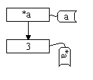
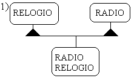
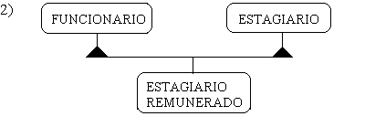
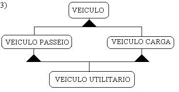

Neste tópico iremos explicar recursos mais particulares de C++, porém não menos importantes para a programação orientada a objetos na linguagem. Alguns recursos como const que está relacionado com encapsulamento poderão ser retirados deste tópico em novas versões do tutorial.
Este exemplo mostra o uso de funções const e sua
importância para o encapsulamento. Const pode
qualificar um parâmetro de função (assegurando que este
não será modificado), uma função membro
(assegurando que esta não modifica os dados membro de sua classe), ou
uma instância de objeto/tipo (assegurando que este não será
modificado.)
Os modos de qualificação descritos atuam em conjunto, para
assegurar que um objeto const não será modificado, C++ só
permite que sejam chamados para este objeto funções membro
qualificadas como const. Const é também
um qualificador, "specifier".
#include <iostream.h>
#include <math.h>
//double sqrt(double x); de math.h retorna raiz quadrada do numero
//double pow(double x, double y); de math.h calcula x a potencia de y
const float ZERO=0.0;
class ponto
{
private:
float x;
//sao ocultos por default nao precisaria private mas e' bom
float y;
//sao ocultos por default
public:
//daqui em diante tudo e acessivel em main.
ponto(float a,float b)
{ x=a; y=b; }
void mostra(void) const
{cout << "X:" << x << " , Y:" << y << endl;}
float distancia(const ponto hi) const
{
return
float(
sqrt(
(
pow(double(hi.x-x),2.0)
+
pow(double(hi.y-y),2.0)
)
)
);
//teorema de Pitagoras
}
};
void main()
{
ponto ap(3.0,4.0);
//instanciacao
ap.mostra();
//funcoes membro public
const ponto origem(ZERO,ZERO);
//defino objeto constante
origem.mostra();
cout << "Distancia da origem:" << origem.distancia(ap);
}
Resultado do programa:
X:3 , Y:4
X:0 , Y:0
Distancia da origem:5
Comentários:
Const qualificando instâncias de objetos/tipos:
const ponto origem(ZERO,ZERO);
const float ZERO=0.0;
Const qualificando funções:
float distancia(const ponto hi) const;
Const qualificando argumentos:
float distancia(const ponto hi) const;
Exercícios:
1)Use tudo o que você aprendeu sobre const na classe reta, definida em CONSTRUTORES E AGREGAÇÃO 1.2.7.
Requisitos:
Saber como um programa se comporta na memória, em termos de chamadas de função e gerenciamento da pilha, "stack".
O que são funções inline: Imagine uma chamada de
uma função membro void altera_raio(float a) da classe circulo
já apresentada, ac.altera_raio(a). Esta
chamada envolve a passagem de parâmetros, inserção da
função na pilha (stack), retorno de um valor (void),
tudo isso representa uma diminuição da velocidade
do programa com relação a um simples: ac.raio=a;
que nesse caso funcionaria muito bem.
Ocorre que nós desejamos usar chamadas de métodos, vimos
inclusive meios de esconder, encapsular o atributo raio para que a única
alternativa para alterar seu valor seja através da chamada de
altera_raio(a). Porque programar desta forma? Porque
é mais seguro, mais próximo dos princípios de
orientação a objetos. Em verdade POO se caracteriza por muitas
chamadas de métodos e uso do "heap", área de memória usada
pela alocação dinâmica.
O que as funções declaradas como inline fazem é traduzir
a chamada do método em tempo de compilação em um
equivalente ac.raio=17.0. evitando todo o contratempo
descrito. Essa tradução do método é colocada na
sequência de código do programa, você pode ter vários
trechos que chamariam funções, desviariam o fluxo do programa
até o retorno desta, convertidos em instruções simples.
Como desvantagem temos o aumento do tamanho do programa, visto que
passarão a existir várias cópias diferentes da
função no programa (uma para cada argumento) ao envés de
um só protótipo de função que era colocado na pilha
no momento da chamada e então tinha os argumentos substituídos.
Nos programa anteriores sobre a classe círculo, se a
função membro mostra fosse inline
haveria uma conversão da chamada interna (dentro de mostra)
de retorna_raio()em simplesmente ac.raio.
Pode haver conversão de várias
funções inline aninhadas, estas
conversões são seguras, porque são feitas pelo
compilador.
Normalmente é vantajoso usar inline para
funções pequenas que não aumentem muito o tamanho do
programa ou funções onde velocidade é crucial. Aqui vale a
conhecida regra 80:20, oitenta porcento do tempo do programa é gasto em
vinte por cento dos métodos. Porém o programador não
precisa se preocupar muito com funções inline
na fase de desenvolvimento, este é um recurso C++ para
aumento de eficiência que pode muito bem ser deixado para o final do
projeto. Saiba porém que as diferenças de tempo decorrentes de
seu uso são sensíveis.
Este exemplo explora as possibilidades que temos para declarar
funções membro e como declará-las para que sejam do
tipo inline:
#include <iostream.h>
struct ponto
{
float x;
float y;
void inicializa(float a,float b)
{ x=a; y=b; } //Apesar de nao especificado compilador tenta
//expandir chamada da funcao como inline porque esta dentro da definicao da
classe.
void mostra(void); //com certeza nao e' inline, externa a classe e sem
qualificador.
inline void move(float dx,float dy); //e' inline , prototipo, definicao
};
void ponto::mostra(void)
{cout << "X:" << x << " , Y:" << y << endl;}
inline void ponto::move(float dx,float dy) //implementacao, codigo
{
x+=dx;
y+=dy;
}
void main()
{
ponto ap;
ap.inicializa(0.0,0.0);
ap.mostra();
ap.move(1.0,1.0);
ap.mostra();
ap.x=100.0;
ap.mostra();
}
Comentários:
O compilador tenta converter a função
inicializa em inline, embora não
esteja especificado com a palavra reservada inline que isto é para ser
feito. Esta é uma regra, sempre que a função estiver
definida na própria classe (struct{}) o
compilador tentará convertê-la em inline.
Foi dito que o compilador tenta porque isto pode variar de
compilador para compilador, se ele não consegue converter em
inline , devido a complexidade da
função, você é normalmente avisado, tendo que
trocar o lugar da definição da função membro.
Note que se a função membro é implementada fora da
classe, tanto o protótipo da função membro, quanto a
implementação devem vir especificados com
inline para que a conversão ocorra.
Resultado do programa:
X:0 , Y:0
X:1 , Y:1
X:100 , Y:1
Neste tópico serão apresentados os recursos de C++ para alocação dinâmica de variáveis de tipos simples e objetos, ou seja, estudaremos a alocação de estruturas em tempo de execução.
Este exemplo mostra como trabalhar com ponteiros para variáveis
de tipos pré-definidos (não definidos pelo usuário)
usando new e delete.
O programa a seguir cria um ponteiro para uma variável inteira, aloca
memória para esta variável e imprime seu valor.
#include <iostream.h>
void main()
{
int* a;
//declara um ponteiro para endereco de variavel inteira
a=new int(3);
//aloca memoria para o apontado por a, gravando neste o valor 3
cout << (*a) << endl ;
//imprime o valor do apontado por a
delete a;
//desaloca memoria
}
Resultado do programa:
3
Diagrama das variáveis na memória:
Comentários:
Se a fosse uma struct ou class
e tivesse um dado membro chamado dd,
poderíamos obter o valor de dd através
de (*a).dd que pode ser todo abreviado em
a->dd onde -> é
uma seta, ou flecha que você pode ler como "o apontado" novamente. Os
parênteses em (*a).dd são
necessários devido a precedência do operador . com
relação ao *. Esta sintaxe abreviada
será bastante usada quando alocarmos dinamicamente objetos.
Observação:
int* a;
a=new int(3);
pode ser abreviado por:
int* a=new int(3);
O exemplo a seguir aloca estaticamente, em tempo de compilação,
um vetor de inteiros com três posições. Em seguida,
gravamos as três posições e as mostramos na tela:
#include <iostream.h>
void main()
{
int a[3];
//aloca o vetor de tamanho 3, estaticamente
a[0]=1;
//atribui a posicao indice 0 do vetor
a[1]=2;
//atribui 2 a posicao indice 1 do vetor
a[2]=3;
//atribui 3 a posicao indice 2 do vetor
cout << a[0] << " " << a[1] << " " << a[2]
<< endl;
//mostra o vetor
}
Resultado do programa:
1 2 3
Resumo da sintaxe de vetores:
int a[3]; //cria um vetor de inteiros a com tres posicoes, indices uteis
de 0 ate 2
float b[9]; //cria um vetor de float b com nove posicoes, indices uteis de 0
ate 8
b[8]=3.14156295; //grava 3.1415... na ultima posicao do vetor b
if (b[5]==2.17) { /*acao*/} ; //teste de igualdade
Diagrama do vetor:
Perceba que a faixa útil do vetor vai de 0 até (n-1) onde n é o valor dado como tamanho do vetor no momento de sua criação, no nosso caso 3.
Nada impede que você grave ou leia índices fora dessa área
útil, isso é muito perigoso, porque fora dessa área, o
que você tem são outras variáveis de memória e
não o espaço reservado para seu vetor. É perfeitamente
aceitável, embora desastroso escrever em nosso programa
a[4]=3;. O compilador calcula o endereço de memória
da posição 4 com base na posição inicial do vetor e
o tamanho do tipo alocado. Após calculado o endereço da
posição 4 o valor 3 é copiado, apagando o conteúdo
anterior!
Comentários:
Note que não estamos usando ponteiros neste exemplo e é por isso
que o vetor é alocado estaticamente, em tempo de
compilação, é também por este motivo que o
argumento que vai no lugar do 3 no código int a[3];
deve ser uma expressão constante e não uma
variável.
No primeiro exemplo do TAD fração vimos que o compilador
fornece cópia bit a bit para objetos, alertamos também sobre o
perigo de usar este tipo de cópia em conjunto com alocação
dinâmica. O exemplo seguinte mostra um caso onde esta cópia
oferecida pelo compilador é segura, o tópico seguinte 1.5.3.4
mostra um caso onde esta cópia não é segura, leia ambos
para ter uma visão geral do assunto:
#include <iostream.h>
class vetor_tres
{
public:
int vet[3];
//vetor alocado estaticamente numa classe.
vetor_tres(int a,int b,int c)
{ vet[0]=a; vet[1]=b; vet[2]=c; }
//construtor do vetor
void mostra(void)
{ cout << vet[0] << " " << vet[1] << " " <<
vet[2] << endl;}
//funcao membro para mostrar o conteudo do vetor
};
void main()
{
vetor_tres v1(1,2,3);
//criacao de um objeto vetor.
vetor_tres v2(15,16,17);
//criacao de um objeto vetor.
v1.mostra();
//mostrando o conteudo de v1.
v2.mostra();
//mostrando o conteudo de v2.
v2=v1;
//atribuindo objeto v1 ao objeto v2.
v2.mostra();
//mostrando v2 alterado.
v1.vet[0]=44;
v1.mostra();
//mostrando o conteudo de v1.
v2.mostra();
//mostrando o conteudo de v2.
}
Resultado do programa:
1 2 3
15 16 17
1 2 3
44 2 3
1 2 3
Comentários:
Perceba que no caso de alocação estática, quando o
tamanho do vetor é conhecido em tempo de compilação a
cópia é segura. Por cópia segura entenda: as
posições do vetor são copiadas uma a uma e os objetos
não ficam fazendo referência a um mesmo vetor, isto pode ser visto
no resultado do programa, quando alteramos a cópia de v1,
v1 não se altera.
O exemplo a seguir é análogo ao de 1.5.3.2, mas os vetores são alocados dinamicamente, ou seja, você determina em tempo de execução qual o tamanho do vetor, Pascal não permite isso.
#include <iostream.h>
void main()
{
int tamanho;
//armazena o tamanho do vetor a criar.
int* vet;
//ponteiro para inteiro ou vetor de inteiro ainda nao criado
cout << "Entre com o tamanho do vetor a criar";
cin >> tamanho;
vet=new int[tamanho];
//alocando vetor de "tamanho" posicoes comecando em a[0]
for (int i=0;i<tamanho;i++)
{
cout << "Entre com o valor da posicao " << i << ":";
cin >> vet[i];
cout << endl;
}
//loop de leitura no vetor
for (int j=0;j<tamanho;j++)
{
cout << "Posicao " << j << ":" << vet[j]<<endl;
}
//loop de impressao do vetor
}
Resultado do programa:
Entre com o tamanho do vetor a criar3
Entre com o valor da posicao 0:1
Entre com o valor da posicao 1:2
Entre com o valor da posicao 2:3
Posicao 0:1
Posicao 1:2
Posicao 2:3
Comentários:
int* a;
Declara um ponteiro para inteiro.
a=new int[10];
Diferente de new int(10); os colchetes indicam que
é para ser criado um vetor de tamanho 10 e não uma
variável de valor 10 como em 1.5.3.1. Ao contrário de
alocação estática, o parâmetro que vai no lugar do
valor 10 não precisa ser uma expressão constante.
int* a;
a=new int[10];
equivale a forma abreviada:
int* a=new int[10];
A faixa de índices úteis do vetor novamente vai de 0 até (10-1) ou (n-1).
Essa determinação do tamanho do vetor em tempo de execução vai tornar a cópia de objetos feita pelo compilador diferente, ele vai copiar o ponteiro para o vetor, ou seja os objetos passam a compartilhar a estrutura na memória, o que nem sempre pode ser desejável! Existem maneiras de redefinir esta cópia feita pelo compilador o que veremos em 0.
#include <iostream.h>
class vetor_tres
{
public:
int* vet;
//vetor alocado estaticamente numa classe.
vetor_tres(int a,int b,int c)
{
vet=new int[3];
vet[0]=a;
vet[1]=b;
vet[2]=c;
}
//construtor do vetor
void mostra(void)
{ cout << vet[0] << " " << vet[1] << " " <<
vet[2] << endl;}
//funcao membro para mostrar o conteudo do vetor
};
void main()
{
vetor_tres v1(1,2,3);
//criacao de um objeto vetor.
vetor_tres v2(15,16,17);
//criacao de um objeto vetor.
v1.mostra();
//mostrando o conteudo de v1.
v2.mostra();
//mostrando o conteudo de v2.
v2=v1;
//atribuindo objeto v1 ao objeto v2.
v2.mostra();
//mostrando v2 alterado.
v1.vet[0]=44;
v1.mostra();
//mostrando o conteudo de v1.
v2.mostra();
//mostrando o conteudo de v2.
}
Resultado do programa:
1 2 3
15 16 17
1 2 3
44 2 3
44 2 3
Comentários:
Note que quando alteramos a cópia de v1, v1 se altera. Isto
ocorre porque o vetor não é copiado casa a casa como em 1.5.3.3,
só se copia o ponteiro para a posição inicial do vetor, a
partir do qual se calcula os endereços das posições
seguintes v[3]==*(v+3).
Sobre o texto acima: "a partir do qual se calcula os endereços das
posições seguintes", veja o programa exemplo:
#include <iostream.h>
void main()
{
int* v;
v=new int[3];
cout << *(v+1)<<endl;
//imprime o lixo contido na memoria de v[1]
cout << v[1] <<endl;
//imprime o lixo contido na memoria de v[1]
//*(v)==v[0] é uma expressao sempre verdadeira
}
Resultado do programa:
152
152
Comentários:
O que é importante deste exercício é que só se armazena a posição inicial do vetor, as outras posições são calculadas com base no tamanho do tipo alocado e regras de aritmética de ponteiros. Não podemos nos estender muito neste tema, leia sobre aritmética de ponteiros, porém para este tutorial, basta usar os vetores de forma que esta aritmética fique por conta da linguagem.
Vetores alocados dinamicamente e ponteiros são a mesma coisa, isto pode ser visto nesse programa exemplo que mistura a sintaxe de vetores e de ponteiros.
Tipo abstrato de dados vetor.
Um dos grandes problemas de trabalhar com vetores comuns de C++ (
int * a; a=new int[10]; a[22]=3; ) é que
freqüentemente lemos índices inválidos, ou pior gravamos
encima deles.
Gravar encima de um índice fora dos limites de um vetor é um erro freqüente em programação C++. Saiba que fazendo isso você pode estar apagando instruções de outros programas na memória e outras informações importantes! Em alguns casos quando isso ocorre obtém-se inclusive mensagens do sistema operacional avisando que algo está errado e que é necessário reinicializar a máquina.
Curiosidade:
Houve um caso de vírus na internet que se baseava no acesso a índices fora de um vetor para gravar por cima de instruções do sistema operacional, código que garantisse a sua multiplicação.
Algumas linguagens de programação como Pascal e Módula-3
checam os índices para que não se acesse áreas
inválidas de um vetor. Módula-3 fornece inclusive os limites dos
vetores simples da linguagem através de chamadas last(vetor)
ou first(vetor) . Em C++ tal tipo de checagem pode ser
implementada pelo programador como faremos neste exemplo.
Dica de Programação:
Lembre-se: seu sucesso em programação vai depender em muito de sua disciplina e organização tenha sempre em mente que C++ é uma linguagem poderosa e que se não usada corretamente pode criar transtornos e erros não perceptíveis em testes do programa.
Não checar os índices de um vetor em programas grandes é como instalar uma bomba relógio em seu código, é muito provável que em algum instante você ou até mesmo outra pessoa usando seu programa se distraia e acabe por escrever uma rotina que acessa um índice inválido de um vetor, fazendo na maioria das vezes o programa falhar.
A proposta deste exemplo é criar um tipo abstrato de dados vetor com uma interface flexível que sirva para várias aplicações e possa ser facilmente estendida. Este exemplo é simples e vai ser reapresentado com muitas melhorias no decorrer do tutorial, dentre elas: "templates" 4.3, "exception handling" 4.5, e a criação de uma classe iterador para o vetor4.1 . A primeira vista você pode achar que este programa não oferece muito mais que o uso comum de vetores em C++, mas com as melhorias que apresentaremos, certamente você vai preferir representar vetores como tipos abstratos de dados ou TAD's.
//file exvet1.h
//header file para classe vetor
const int inicio=0;
class vetor{
private:
int* v;
//este e' o vetor
int tamanho;
//tamanho maximo do vetor,
public:
vetor (int tam);
//construtor, aloca memória para o vetor.
void atribui(int index,int valor);
//altera uma posicao do vetor
int conteudo(int index);
//retorna conteudo de posicao do vetor
int maximo(void);
//retorna o maior elemento do vetor
int primeiro(void);
//primeiro indice do vetor
int ultimo(void);
//ultimo indice do vetor
~vetor() {delete v;}
//inline function ou use delete v[];
};
//codigo, implementacao, para o header file
#include <iostream.h>
#include <stdlib.h>
#include "exvet1.h"
vetor::vetor (int tam)
{v=new int[tam]; tamanho=tam;}
void vetor::atribui(int index,int valor)
{
if (index<tamanho && index>=inicio)
v[index]=valor;
}
int vetor::conteudo(int index)
{
if (index>=tamanho || index<inicio) {cerr << "Fora dos limites";
exit(1);}
return v[index];
}
int vetor::primeiro(void)
{ return inicio;}
int vetor::ultimo(void)
{ return tamanho-1;}
int vetor:: maximo(void)
{int candidato=inicio; //candidato ao maximo
for (int i=inicio;i<tamanho;i++)
if (v[i]>v[candidato]) candidato=i;
return v[candidato];}
//programa pricipal
#include <iostream.h>
#include "exvet1.h"
main()
{
int aux;
//para ler valor a atribuir
vetor meu(5);
for (int i=meu.primeiro();i<=meu.ultimo();i++)
{
cout << "Entre com valor da posicao:" << i << "\n";
cin >> aux;
meu.atribui(i,aux);
}
for (int j=meu.primeiro();j<=meu.ultimo();j++) cout<<
meu.conteudo(j)<< " ";
cout <<endl << "Maximo:" << meu.maximo();
return 0;
}
Comentários:
O método
~vetor() {delete v;} //use delete []v;depende do
compilador
é um destrutor, assim como o construtor ele não tem valor de
retorno porque é chamado pelo sistema operacional quando o objeto sai de
escopo ou quando você desaloca memória de um ponteiro para o
objeto. A única ação do destrutor é liberar a
memória ocupada pelo atributo vetor de inteiros (int * v)
da classe vetor. De um modo geral os destrutores servem para
"arrumar a casa" quando objetos são desalocados ou saem de escopo. A
sintaxe dos métodos para deleção de vetores
delete v; ou delete []v;
podem variar de compilador para compilador, o usuário deve checar que
sintaxe seu compilador suporta.
Note que quando não dispúnhamos do destrutor o programador era obrigado a deletar passo a passo todas as estruturas dinâmicas dos objetos que saiam de escopo, existem técnicas avançadas para obter coleta automática de lixo em C++ baseadas neste ponto.
Resultado do programa:
Entre com valor da posicao:0
4
Entre com valor da posicao:1
5
Entre com valor da posicao:2
9
Entre com valor da posicao:3
2
Entre com valor da posicao:4
1
4 5 9 2 1
Maximo:9
Dica de programação:
Saiba que uma prática bastante útil na fase de testes de um programa é introduzir mensagens informativas em pontos convenientes. Quando trabalhando com objetos tal prática pode ser usada de vários modos, por exemplo pode-se inserir uma mensagem no destrutor de uma classe para verificar quando os objetos são eliminados e se são eliminados corretamente.
Exercícios:
1) Note que os métodos atribui e conteúdo apresentam estilos diferentes de lidar com índices fora dos limites do vetor. Um apresenta uma mensagem de erro e termina o programa. Outro simplesmente não executa a ação se os parâmetros não estiverem corretos. Escolha um dos estilos e uniformize o programa. Quando você estudar "exception handling" 4.5 verá maneiras melhores de lidar com esses problemas.
2) Implemente uma função membro chamada ordena para o tipo abstrato de dados vetor definido acima. Use qualquer algoritmo de ordenação.
3)Crie destrutores para as classes que você já implementou, mesmo
que elas não tenham atributos que usem alocação
dinâmica. Introduza mensagens tipo cout <<
"Goodbye..."; nos destrutores destas classes . Como essas
mensagens podem ser úteis? Defina vários níveis de blocos
de código, fazendo assim com que objetos saiam de escopo em tempos
diferentes e teste seus destrutores.
4)Melhore o exercício anterior introduzindo um nome para o objeto. Este
nome deve ir nas saídas de tela e é nome dado para o
construtor como uma string (char*). Não
esqueça de deletar esta string no destrutor da classe depois de imprimir
a mensagem.
5)Crie uma função membro de nome preenche, que inicializa todas as posições de um vetor com o valor de um de seus argumentos.
6)Defina um programa chamado grandes que implementa o tipo abstrato de dados números grandes e inteiros, este tipo deve usar um vetor do tipo numérico que você achar conveniente para representar os algarismos. Talvez estudar circuitos lógicos como somadores, etc o ajude a implementar as quatro operações matemáticas básicas para estes tipo em termos de "look ahead carrier" e outras técnicas de performance para implementar as operações.
7)Note que na alocação do vetor:
vetor::vetor (int tam)
{v=new int[tam]; tamanho=tam;}
, não é checado se o valor passado tam é maior que 0, faça este teste.
Quando explicarmos "exception handling" você terá métodos melhores de lidar com esses erros.
Pula, em Modula-3 já são alocados.
Este exemplo mostra como trabalhar com ponteiros para objetos, new e delete, como alocar memória e chamar corretamente os construtores.
Comentários:
Perceba que agora não estamos alocando um vetor de inteiros com
três posições (new int[3]), mas
um inteiro que contém o valor 3. Você pode ler o código
(*a) como: "O apontado de a".
Se a fosse uma struct ou class
e tivesse um dado membro chamado dd, poderíamos obter o
valor de dd através de (*a).dd que pode ser todo abreviado em
a->dd onde -> é
uma seta, ou flecha que você pode ler como "o apontado" novamente.
Os parênteses em (*a).dd são
necessários devido a precedência do operador . com
relação ao *.
Este tópico vai explicar como usar o operador &,
também chamado de operador "endereço de...". Este
operador fornece o endereço, a posição na memória
de uma variável, de um argumento, etc. Sua utilização
é muito simples, se a é uma variável inteira,
&a retorna um ponteiro para a.
O programa a seguir ilustra a sintaxe do operador:
#include <iostream.h>
void main()
{
int a;
a=10;
int* p;
p=& a;
(*p)=13;
cout << a;
}
Explicando o programa passo a passo:
int a;
Declara uma variável inteira com nome a.
a=10;
atribui valor 10 a variável a.
int* p;
Declara um ponteiro de variável inteira , o nome do ponteiro é p.
p=& a;
Atribui o "endereço de a" , "& a" ao
ponteiro p.
(*p)=13;
Atribui 13 ao "apontado de p", "(*p) ", mas como
p aponta para a, a passa de
valor 10 para valor treze através de p.
P é um "alias" para a.
cout << a;
Imprime o valor esperado que é treze.
O programa a seguir usa o operador "endereço de" para modificar argumentos, parâmetros de uma função, ou seja utiliza passagem por referência, equivalente ao VAR de Pascal. Lembre-se que até agora os argumentos das nossas funções só eram passados por valor.
#include <iostream.h>
void incrementa(int& a)
{
a++;
}
//primeira funcao que usa passagem por referencia
void troca(int& a,int& b)
{
int aux=a;
a=b;
b=aux;
}
//segunda funcao que usa passagem por referencia
void main()
{
int i1=10;
int i2=20;
incrementa(i1);
cout << i1 << endl;
troca(i1,i2);
cout << i1 << endl;
}
Resultado do programa:
11
20
Explicando passo a passo:
As funções criadas no programa, são como dissemos,
capazes de alterar seus parâmetros, incrementa ,
incrementa seu único parâmetro e troca,
troca os dois parâmetros inteiros.
Neste tópico apresentaremos programas que revisam todos conceitos já vistos e acrescentam mais alguns detalhes da linguagem.
Neste tópico vamos apresentar um exemplo que usa tudo o que foi aprendido até agora e introduz mais alguns outros conceitos. Este exemplo é um jogo de quebra cabeça. Provavelmente você já viu um quebra cabeça deste tipo, ele é chamado quebra cabeça de tijolos deslizantes. É composto de um tabuleiro (matriz) quadrado preenchido com peças de 0 até (lado^2-1) onde lado é a dimensão de um lado do tabuleiro. A representação no programa é numérica, mas normalmente esses quebra cabeças são vendidos com desenhos pintados sobre as pecas. No lugar onde deveria estar a última peça deixa-se um espaço vazio para que se possa mover as peças do tabuleiro. O objetivo é colocar todos os tijolos em ordem, como no esquema abaixo:
O que um quebra cabeça tem a ver com encapsulamento? Simples o
jogador é obrigado a seguir as regras do jogo, portanto não pode
conhecer todas as operações que se aplicam ao quebra
cabeça, e também não pode acessar sua
representação interna. Vamos ver como isso é feito usando
as palavras reservadas private e public , conceitos de
agregação e reuso de código de uma classe matriz.
Além disso usamos const para garantir a integridade da matriz do
quebra-cabeça.
Veja também que estamos abordando o tópico representação, não raro você terá que modelar objetos que representem algo do mundo real como motor, quebra-cabeça, conta bancária, circuito elétrico e assim por diante. Outros objetos podem ser mais abstratos, exemplo: árvore binária.
Mais sobre as regras:
Você concorda que dada uma situação onde o
espaço vazio se encontra no meio do quebra-cabeça dado como
exemplo o usuário só tem 4 opções? São elas:
mover para cima (função membro
movecima), mover para baixo , mover para a esquerda ou
então para a direita. Note que essas funções membro
só trocam peças vizinhas, isso é importante pois é
provado matematicamente que algumas trocas de peças distantes ("Odd
permutations") podem tornar o quebra-cabeça insolúvel. Isto
é facil de ser verificado para um quebra cabeça 2x2.
Garantimos a solução do quebra-cabeça pelo caminho inverso do embaralhamento das peças, que parte do quebra-cabeça solucionado e aplica aleatoriamente sequências de movimentos iguais aos que o usuário usa para solucionar o jogo.
A matriz bidimensional é representada linearmente (vetor) e as funções membro de conversão de índice linear para colunas e/ou linhas e atribuições são fornecidas, mas somente as necessárias para o jogo .
Recursos utilizados:
Argumentos de linha de comando, funções de
conversão da stdlib,
representação linear de uma matriz, const.
Argumentos de linha de comando:
Você pode fazer programas que aceitem argumentos de linha de
comandos, resultando em algo equivalente a:
dir /w //dos
format A: //dos
ou ls -la //unix
Esses argumentos podem ficar disponíveis na chamada da função main de seu programa como os parâmetros "argument counter" e "argument values", veja trecho de programa abaixo.
void main(int argc, char *argv[]) {.../*use argv e argc*/ ...}
argc é um inteiro
argv é um vetor de
char* contendo os argumentos passados. (/w
...)
argv [0] é o nome do programa
chamado.
A faixa útil de argvalues é :
argv[1]...argv[argc-1]
Portanto se argc==2, temos um único argumento
de linha de comando, disponível como string em argv[1]
. Faça alguns testes com o mesma main usada no programa
abaixo e alguns cout's imprimindo os argumentos para
entender melhor o assunto.
Const:
Já exemplificado em 1.5.1
Representação linear de uma matriz:
Vantagem da representação linear (vetor): para referenciar uma posição gasta-se somente um inteiro contra dois da representação matriz (linha,coluna). Podemos agora considerar posições que apontam para outras posições, basta interpretar o conteúdo do vetor como um índice linear.
Desvantagem da representação linear (vetor): é
necessário criar funções de conversão de
índice na forma (linha,coluna) para (índice linear) e de
(índice linear) para (coluna) ou (linha). Veja as funções
lin e col e
linear do exemplo seguinte.
Funções de conversão da Stdlib:
A função int atoi(char* a)
converte uma string para um inteiro.
#include <stdlib.h>
class matriz //quebra cabeca de tijolos deslizantes
{
private:
int linhas; //numero de linhas da matriz
int colunas; //numero de colunas na matriz
int tam; //=linhas*colunas
int *lc; //vetor de tamanho linha*colunas representando matriz:0..(tam-1)
public:
matriz(const int l,const int c); //cria matriz LxC
//qualquer uma das funcoes abaixo retorna nil se nao conseguiu
int* linear(const int lin,const int col)const ; //ind linear a partir de linha
e coluna
int* col(const int indlin)const ;//coluna a partir do indice linear
int* lin(const int indlin)const ; //linha a partir do indice linear
int trocaindlin(const int i,const int j); //argumentos: 2 indices lineares
//retorna 1 conseguiu, 0 nao conseguiu
int atribuiindlin(const int i,const int v); //atribui v ao indice i
//retorna 1 conseguiu, 0 nao conseguiu
int* retornaindlin(const int i); //retorna conteudo do indice i
//retorna nil se nao conseguiu
int getl(void); //retorna numero de linhas
int getc(void); //retorna numero de colunas
int gett(void); //retorna tamanho = linhas*colunas
~matriz();
};
#include "matriz.h"
matriz::matriz(const int l,const int c) //cria matriz
{
lc=new int[l*c]; //l,c dimensoes ; lc vetor[l*c]
linhas=l;
colunas=c;
tam=linhas*colunas;
}
int* matriz::linear(const int alin,const int acol) const
//ind linear a partir de linha e coluna
{
int* result=new int; //valor de retorno
if ( (0<alin) && (alin<=linhas) && (0<acol) &&
(acol<=colunas) )
{
(*result)=(alin-1)*colunas+acol;
return result;
}
else
return NULL;
}
int* matriz::col(const int indlin)const //coluna a partir do indice linear
{
int* result=new int;
if ( (0<indlin) && (indlin<=tam) )
{
(*result)=(indlin % colunas);
if ((*result)==0) (*result)=colunas;
return result;
}
else
return NULL;
}
int* matriz::lin(const int indlin)const //linha a partir do indice linear
{
int* result=new int;
if ( (0<indlin) && (indlin<=tam) )
{
(*result)=(int((indlin-1) / colunas)+1);
return result;
}
else
return NULL;
}
int matriz::trocaindlin(const int i,const int j) //argumentos: 2 indices
lineares
//retorna 1 conseguiu, 0 nao conseguiu
{
int aux;
if ( (0<i) && (i<=tam) && (0<j) && (j<=tam)
)
{ aux=lc[i-1]; //efetua a troca
lc[i-1]=lc[j-1]; //embora para usuario a matriz vai de 1 ate l*c
//para mim vai de o ate l*c-1
lc[j-1]=aux;
return 1; //sucesso
}
else return 0; //falhou
}
int matriz::atribuiindlin(const int i,const int v)
//retorna 1 conseguiu, 0 nao conseguiu
{
if ( (0<i) && (i<=tam) )
{
lc[i-1]=v; //efetua a atribuicao
return 1;
}
else return 0; //falhou
}
int* matriz::retornaindlin(const int indlin)
//retorna nil se nao conseguiu
{
int* result=new int;
if ( (0<indlin) && (indlin<=tam) )
{
*result=lc[indlin-1];
return result;
}
else
return NULL;
}
int matriz::getl(void) //retorna numero de linhas
{
return linhas;
}
int matriz::getc(void) //retorna numero de colunas
{
return colunas;
}
int matriz::gett(void) //retorna tamanho
{
return tam;
}
matriz::~matriz()
{
delete lc;
}
//quebra cabecas de tijolos deslizantes
#include <iostream.h> //para cin cout
#include <iomanip.h> //formatar cout output com >> setwidth()
#include <stdlib.h> //uso rand() em embaralha
#include <string.h> //atoi() para converter argumentos de linha de
comando
#include "matriz.h"
const int min_lado=2; //minimo tamanho lateral do quebracab.
const int tam_padrao=5; //tamanho padrao
class quebracab //quebra cabeca de tijolos deslizantes
{
private:
int vazio; //indice linear da casa vazia
int mov; //numero de movimentos
matriz* mqc; //matriz interna do quebra cabecas
public:
quebracab(const int ld=tam_padrao); //cria quebra cabeca, ld=lado
void mostra() const; //mostra quebra cabeca
void movedir(); //move celula a esq de vazio para direita.
void moveesq(); //analogo
void movebaixo(); //analogo
void movecima(); //analogo
void embaralha(); //embaralha quebracabeca
int tstsolucao() const; //testa se quebracabeca esta solucionado
int retorna_mov() { return mov; } //retorna numero de movimentos
~quebracab(); //destroi quebra cabecas
};
quebracab::quebracab(const int ld) //argumento padrao desnessario, ja
declarado
{
int ldc=abs(ld); //ld copia = valor positivo de ld
if (ldc<min_lado) ldc=min_lado;
mqc=new matriz(ldc,ldc); //inicializa objeto matriz
for(int i=1;i<mqc->gett();i++)
mqc->atribuiindlin(i,i); //initializa casas da matriz
mqc->atribuiindlin(mqc->gett(),0);//atribui zero a posicao da celula
vazia
vazio=mqc->gett(); //define posicao da celula vazia
mov=0; //sem nenhum movimento
embaralha(); //embaralha quebracabeca
}
void quebracab::mostra() const //mostra quebra cabeca
{
int i,j; //linha e coluna
int* ind; //valor atual
for(i=1;i<=mqc->getl();i++) //loop das linhas
{ //linhas
for(j=1;j<=mqc->getc();j++) //loop das colunas
{ //colunas
ind=mqc->linear(i,j); //resultado tambem e ponteiro
if
((*ind)==vazio) cout << setw(4)<<" "; //vazio=espaco
else
cout << setw(4) << (*mqc->retornaindlin(*ind)); //nao e o
vazio, mostra conteudo
} //colunas
cout << endl; //mudanca de linha
} //linhas
cout << endl;
}
void quebracab::movedir() //move celula a esq de vazio para direita
//espaco move para esquerda
{
if ( (*(mqc->col(vazio))) !=1) /*nao esta na borda esquerda*/
{
mqc->trocaindlin(vazio,vazio-1);
mov++;
vazio=vazio-1;
}
}
void quebracab::moveesq() //espaco move para direita
{
if ( (*(mqc->col(vazio)))!=mqc->getc() ) /*nao esta na borda
direita*/
{
mqc->trocaindlin(vazio,vazio+1);
mov++;
vazio=vazio+1;
}
}
void quebracab::movebaixo() //espaco move para cima
{
if ((*(mqc->lin(vazio)))!=1) /*nao esta no topo*/
{
mqc->trocaindlin(vazio,vazio-(mqc->getc())); //chama funcao private
mov++;
vazio=vazio-(mqc->getc());
}
}
void quebracab::movecima() //espaco move para baixo
{
if ((*mqc->lin(vazio))!=mqc->getl()) /*nao esta em baixo*/
{
mqc->trocaindlin(vazio,vazio+(mqc->getc()));
mov++;
vazio=vazio+(mqc->getc());
}
}
void quebracab::embaralha() //embaralha quebracabeca
{
int i,j; //loop principal, loop secundario
int r; //r times
for(j=0;j<mqc->gett();j++)
{
r=(rand()% mqc->getc());
for(i=0;i<r;i++) {this->movedir();} //move r vezes
r=(rand()% mqc->getl());
for(i=0;i<r;i++) {this->movebaixo();}
r=(rand()% mqc->getc());
for(i=0;i<r;i++) {this->moveesq();}
r=(rand()% mqc->getl());
for(i=0;i<r;i++) {this->movecima();}
}
mov=0; //inicializa movimentos
}
int quebracab::tstsolucao() const //testa se quebracabeca esta solucionado
{
int i=1,cont=1;
while( cont && (i< (mqc->gett()) ) )
{
if ((*(mqc->retornaindlin(i)))==(i)) cont=1; else cont=0;
i++;
}
return (cont); //i=qctam esta solucionado 1 2 3... 24 0
}
quebracab::~quebracab()
{if (mqc!=NULL) delete mqc; cout << " Quebra cabeca destruido!\n";}
//destroi quebracab
main(int argc,char *argv[]) //argumentos sao declarados aqui
{ //main
int ladocomp;
char opcao; //usada em menu como variavel de opcao
if (argc>1) ladocomp=atoi(argv[1]);
//convertendo argumento de linha de comando para inteiro
else ladocomp=tam_padrao; //valor default
quebracab aquebracab(ladocomp); //criando quebracab
do {
aquebracab.mostra();
cout <<"\n"; //menu de opcoes
cout <<" Movimentos:" << aquebracab.retorna_mov()<< "\n";
cout <<" 4<- 6-> 8Cima 2Baixo SSair Eembaralha \n";
cout <<" Reconhece sequencias de comandos: 268624 <Enter>\n";
cout <<" Aceita argumento de linha de comando: quebracab 4 (cria
quebracabeca 4 x 4)\n";
cout <<" Entre comando:";
cin >> opcao; //le opcao do usuario
cout <<"\n";
switch(opcao) //executa opcao do usuario
{
case 'E':
case 'e':
aquebracab.embaralha();
break;
case '8': aquebracab.movecima();
break;
case '2': aquebracab.movebaixo();
break;
case '4': aquebracab.moveesq();
break;
case '6': aquebracab.movedir();
break;
default: ;
} //fim do bloco de codigo do switch-case
if (aquebracab.tstsolucao()) opcao='s'; //sai do loop de menu
} while ((opcao!='S') && (opcao!='s')); //loop menu
if (aquebracab.tstsolucao()) {aquebracab.mostra(); cout << "
Parabens!\n";}
else cout << " Quebra cabeca nao solucionado. Tente novamente!\n";
return 0;
} //bloco de codigo principal
Comentários:
delete []qc; Este destrutor adota uma
técnica diferente para deleção de vetores, cheque que
técnicas seu compilador suporta.
Exercícios:
1) Se você implementou o jogo de quebra-cabeça notará que não existe apagamento da tela, somente "scroll". Isto torna o jogo um pouco cansativo porque dá para ver o quebra cabeça sendo empurrado para o alto da tela e a nova representação sendo criada na parte de baixo do "display". A razão de tal escolha é simples: a função de apagamento de tela do DOS não é portável para o UNIX e vice versa. Descubra a função de CLS (Clear Screen) do seu ambiente de programação e use-a no programa. Numa segunda etapa introduza cores no programa, você pode usar a função módulo (número da peça ,número de cores) para determinar a cor de uma peça.
2) Implemente outros jogos simples. Pense em jogos compatíveis com a sua experiência. Aqui vão algumas sugestões:
Senha: Jogo bastante conhecido, o programa cria um código de n
dígitos e m símbolos. Através de chutes o jogador tenta
acertar o código na seqüência. A cada chute o programa da
dicas dos acertos sendo elas de dois tipos: Acertou o símbolo X vezes ou
acertou o símbolo e a posição Y vezes. Você
terá que usar uma função para obter números
aleatórios, provavelmente rand da "library"
<math.h>.
Jogo da velha.
Se você não conhece os jogos procure obter mais informações antes de começar a implementa-los.
5)Melhore a classe matriz para aceitar nas suas funções argumentos do tipo (linha,coluna) e não só índices lineares.
4) Construa um programa simples que recebe argumentos da linha de
comando e os imprime através de cout.
Normalmente é isso que deve ser feito antes de usar um recurso da
linguagem pela primeira vez, experimenta-lo em programas simples.
Neste tópico mostraremos como construir hierarquias de tipo por generalização / especialização.
Construiremos uma hierarquia de tipos simples para demonstrar herança pública em C++.
Comentários:
A classe ponto que está no topo da hierarquia
é chamada de classe base, enquanto que as classes
ponto_reflete e ponto_move
são chamadas classes filhas ou herdeiras. As classes da
hierarquia são simples, ponto_move apresenta a
função membro move, já vista
neste tutorial em 1.2.6, ponto_reflete apresenta a
função membro (reflete) que inverte o
sinal das coordenadas.
Dada a simplicidade das classes o leitor poderia se perguntar, porque não juntar
as três em uma só . A pergunta faz sentido, mas e se quiséssemos criar uma classe ponto que não se movesse, apenas refletisse e outra que só se movesse? E se quiséssemos projetar nosso programa segundo uma hierarquia de especialização / generalização da classe ponto? O exemplo mostra como fazê-lo.
Herança Pública:
Na herança pública as classes filhas passam a ter as
mesmas funções membro public da classe
pai, as classes filhas podem acrescentar funções membro, dados
membro e até redefinir funções membro herdadas (veremos
mais tarde). Os atributos da classe pai não são acessíveis
diretamente na classe filha a não ser que sejam qualificados como
protected, veja 2.1.2. Por isso é que se diz
que as classes filhas garantem pelo menos o comportamento "behaviour" da classe
pai, podendo acrescentar mais características.
Diagrama de acesso, visibilidade, de dados membro e funções membro de uma classe pai para uma classe filha ou herdeira por herança pública:
Construtores e herança:
No construtor de uma classe filha o programador pode incluir a chamada do construtor da classe pai.
Destrutores e herança:
Quando um objeto da classe derivada é destruído, o
destrutor da classe pai também é chamado dando a oportunidade de
liberar a memória ocupada pelos atributos private
da classe pai.
//header file
class ponto
{
private:
float x; //sao ocultos por default
float y; //sao ocultos por default
public: //daqui em diante tudo e acessivel.
ponto(float a,float b);
void inicializa(float a,float b);
float retorna_x(void);
float retorna_y(void);
void altera_x(float a);
void altera_y(float b);
void mostra(void);
};
class ponto_reflete:public ponto //classe filha
{
private: //se voce quer adicionar atributos...
public:
ponto_reflete(float a, float b);
void reflete(void);
};
class ponto_move:public ponto
{
public:
ponto_move(float a,float b);
void move(float dx,float dy);
};
//implementation file
#include <iostream.h>
#include "pontos.h"
ponto::ponto(float a,float b)
{
inicializa(a,b);
}
void ponto::inicializa(float a,float b)
{
x=a;
y=b;
}
float ponto::retorna_x(void)
{ return x; }
float ponto::retorna_y(void)
{ return y; }
void ponto::altera_x(float a)
{ x=a; }
void ponto::altera_y(float b)
{ y=b; }
void ponto::mostra(void)
{
cout << "(" << x << "," << y << ")"
<<endl;
}
ponto_reflete::ponto_reflete(float a,float b):ponto(a,b)
{ }
void ponto_reflete::reflete(void)
{
altera_x(-retorna_x());
altera_y(-retorna_y());
}
ponto_move::ponto_move(float a,float b):ponto(a,b)
{ }
void ponto_move::move(float dx,float dy)
{
altera_x(retorna_x()+dx);
altera_y(retorna_y()+dy);
}
#include <iostream.h>
#include "pontos.h"
void main()
{
ponto_reflete p1(3.14,2.17);
p1.reflete();
cout << "P1";
p1.mostra();
ponto_move p2(1.0,1.0);
p2.move(.5,.5);
cout << "P2";
p2.mostra();
}
Resultado do programa:
P1(-3.14,-2.17)
P2(1.5,1.5)
Herança Private:
Ainda não foi inserido no tutorial nenhum exemplo com este tipo
de herança, mas o leitor pode experimentar mais tarde especificar uma
classe herdeira por heranca private como: class herdeira: private
nome_classe_base; , e notará que as funções
membro desta classe base só são acessíveis dentro das
declarações da classe filha, ou seja a classe filha não
atende por essas funções membro, mas pode usá-las em seu
código.
Herança private é um recurso que
você precisa tomar cuidado quando usar. Normalmente, quando usamos
herança dizemos que a classe filha garante no mínimo o
comportamento da classe pai (em termos de funções membro) , a
herança private pode invalidar esta premissa.
Muitos programadores usam herança private
quando ficaria mais elegante, acadêmico, trabalhar com
agregação. Uma classe pilha pode ser construída a partir
de uma classe que implementa uma lista ligada por agregação ou
por herança private. Na agregação
(a escolhida em hierarquias de implementação) a classe
pilha possui um dado membro que é uma lista ligada.
Igual ao exemplo um, mas agora tornando os atributos da classe pai
acessíveis para as classes filhas através do uso de
protected. Protected deixa os atributos da classe pai
visíveis, acessíveis "hierarquia abaixo".
Diagramas de acesso, visibilidade, de dados membro e funções membro de uma classe pai para uma classe filha ou herdeira:
Para uma classe filha por herançapública:
Visibilidade da classe herdeirapara o restante do programa:
//header file
class ponto
{
protected:
//*****aqui esta a diferenca ******
float x;
//visiveis hierarquia abaixo
float y;
//visiveis hierarquia abaixo
public:
//daqui em diante tudo e acessivel.
ponto(float a,float b);
void inicializa(float a,float b);
float retorna_x(void);
float retorna_y(void);
void altera_x(float a);
void altera_y(float b);
void mostra(void);
};
class ponto_reflete:public ponto
{
private:
//se voce quer adicionar dados membro encapsulados...
public:
ponto_reflete(float a, float b);
void reflete(void);
};
class ponto_move:public ponto
{
public:
ponto_move(float a,float b);
void move(float dx,float dy);
};
//implementation file
#include <iostream.h>
#include "pontos.h"
ponto::ponto(float a,float b)
{
inicializa(a,b);
}
void ponto::inicializa(float a,float b)
{
x=a;
y=b;
}
float ponto::retorna_x(void)
{ return x; }
float ponto::retorna_y(void)
{ return y; }
void ponto::altera_x(float a)
{ x=a; }
void ponto::altera_y(float b)
{ y=b; }
void ponto::mostra(void)
{
cout << "(" << x << "," << y << ")"
<<endl;
}
ponto_reflete::ponto_reflete(float a,float b):ponto(a,b)
{ }
void ponto_reflete::reflete(void)
{
x=-x;
//*** protected da esse tipo de acesso aos atributos da classe pai
y=-y;
}
ponto_move::ponto_move(float a,float b):ponto(a,b)
{ }
void ponto_move::move(float dx,float dy)
{
x=x+dx;
//acesso so na hierarquia, no resto do programa nao.
y=y+dy;
}
#include <iostream.h>
#include "pontos.h"
void main()
{
ponto_reflete p1(3.14,2.17);
p1.reflete();
cout << "P1";
p1.mostra();
ponto_move p2(1.0,1.0);
p2.move(.5,.5);
cout << "P2";
p2.mostra();
}
. Igual ao exemplo anterior, mas agora redefinindo a
função membro mostra para a classe filha
ponto reflete.
Comentários:
Na verdade este exemplo deveria pertencer ao tópico de polimorfismo, contudo, nos exemplos seguintes usaremos também redefinições de funções membro, portanto faz-se necessário introduzi-lo agora. Teremos mais explicações sobre o assunto.
Uma classe filha pode fornecer uma outra implementação para uma função membro herdada, caracterizando uma redefinição "overriding" de função membro. Importante: a função membro deve ter a mesma assinatura (nome, argumentos e valor de retorno), senão não se trata de uma redefinição e sim sobrecarga "overloading".
No nosso exemplo a classe ponto_reflete redefine a
função membro mostra da classe pai,
enquanto que a classe herdeira ponto_move aceita a
definição da função membro
mostra dada pela classe ponto que
é sua classe pai.
//header file
class ponto
{
private:
float x;
//sao ocultos por default
float y;
//sao ocultos por default
public:
//daqui em diante tudo e acessivel.
ponto(float a,float b);
void inicializa(float a,float b);
float retorna_x(void);
float retorna_y(void);
void altera_x(float a);
void altera_y(float b);
void mostra(void);
};
class ponto_reflete:public ponto
{
private:
//se voce quer adicionar dados membro
public:
ponto_reflete(float a, float b);
void reflete(void);
void mostra(void);
//redefinicao
};
class ponto_move:public ponto
{
public:
ponto_move(float a,float b);
void move(float dx,float dy);
//esta classe filha nao redefine mostra
};
//implementation file
#include <iostream.h>
#include "pontos.h"
ponto::ponto(float a,float b)
{
inicializa(a,b);
}
void ponto::inicializa(float a,float b)
{
x=a;
y=b;
}
float ponto::retorna_x(void)
{ return x; }
float ponto::retorna_y(void)
{ return y; }
void ponto::altera_x(float a)
{ x=a; }
void ponto::altera_y(float b)
{ y=b; }
void ponto::mostra(void)
{
cout << "(" << x << "," << y << ")"
<<endl;
}
ponto_reflete::ponto_reflete(float a,float b):ponto(a,b)
{ }
void ponto_reflete::reflete(void)
{
altera_x(-retorna_x());
altera_y(-retorna_y());
}
void ponto_reflete::mostra(void)
{
cout << "X:" << retorna_x() << " Y:";
cout << retorna_y() << endl;
}
//somente altera o formato de impressao
ponto_move::ponto_move(float a,float b):ponto(a,b)
{ }
void ponto_move::move(float dx,float dy)
{
altera_x(retorna_x()+dx);
altera_y(retorna_y()+dy);
}
#include <iostream.h>
#include "pontos.h"
void main()
{
ponto_reflete p1(3.14,2.17);
p1.reflete();
cout << "P1";
p1.mostra();
ponto_move p2(1.0,1.0);
p2.move(.5,.5);
cout << "P2";
p2.mostra();
}
Resultado do programa:
P1X:-3.14 Y:-2.17
P2(1.5,1.5)
Exercícios:
1)Teste redefinição de função membro colocando
"cout's" em funções membro da hierarquia, tais como:
cout << "Redefinido!"; cout << "Original!";
. Construiremos sem importar nenhum outro código, uma hierarquia de listas ligadas especializadas. Um dos objetivos é obter uma implementação de lista que possa ser reutilizada para criação de pilhas e filas.

lista ultimo e lista ordenada indica herança,
é uma associação do tipo "is a". Algumas
simplificações foram feitas do diagrama original.No tópico sobre templates 0 modificaremos este exemplo para suportar tipos parametrizados. No tópico sobre hierarquias de implementação 2.2 usamos a versão de lista descrita aqui para criar uma classe que implementa uma fila.
#ifndef MLISTH_H
#define MLISTH_H
#include <stdlib.h>
#include <iostream.h>
//Criacao de uma hierarquia de listas ligadas.
//O elemento da lista e' um inteiro
enum Boolean{FALSE,TRUE};
class no{ //este e' o no da lista ligada, so e' usado por ela
private:
int info; //informacao
no* prox; //ponteiro para o proximo
public:
no();
no(int i,no* p);
no* get_prox(void);
void set_prox(no* p);
int get_info(void);
void set_info(int i);
no* dobra(void);
~no(void);
} ;
class lista{ //esta e' a lista ligada comum.
protected: //"visivel hierarquia abaixo"
no* primeiro; //primeiro no da lista, aqui eu insiro e removo.
public:
lista(void);
Boolean vazia(void)const;
Boolean contem(int el)const;
void insere_primeiro(int elem);
int* remove_primeiro();
void mostra()const;
~lista(void);
}; //fim classe lista
class listaultimo:public lista { //essa e a lista util para
//implementar pilhas e filas.
protected: //protected e uma opcao outra e' get_ultimo() e set_...
no* ultimo;
public:
listaultimo(void);
void insere_ultimo(int elem); //nova
void insere_primeiro(int elem); //redefinicao
int* remove_primeiro();//redefinicao
~listaultimo(void);
//as operacoes nao redefinidas sao validas.
};
class listaordenada:public lista {
//essa e' a lista comum com aprimoramentos/especializacoes
public:
listaordenada(void);
Boolean contem(int el)const;
void insere_primeiro(int elem);
//insere em ordem
int* remove_elemento(int el);
//remove elemento el se existir
~listaordenada(void);
};
#endif
#include "mlisth.h"
#include <iostream.h>
#include <stdlib.h>
no::no()
{prox=NULL;cout << "Hi";}
no::no(int i,no* p)
{info=i;prox=p;cout << "Hi";}
no* no::get_prox(void){return prox;}
void no::set_prox(no* p) {prox=p;}
int no::get_info(void) {return info;}
void no::set_info(int i) {info=i;}
no* no::dobra(void)
{
if (get_prox()==NULL) return new no(get_info(),NULL);
else return new no(get_info(),this->get_prox()->dobra());
//recursividade para duplicacao da lista
}
no::~no(void) {cout << "bye";}
lista::lista(void):primeiro(NULL) {}
//bloco de codigo vazio
Boolean lista::vazia(void)const
{
return Boolean(primeiro==NULL);
}
Boolean lista::contem(int el) const//mais rapido que iterador
{
no* curr;
int Conti;
curr=primeiro;
Conti=TRUE;
while ((curr!=NULL) && Conti )
{
if (curr->get_info()!=el)
{if (curr->get_prox()==NULL) Conti=FALSE; else
curr=curr->get_prox();}
else
Conti=FALSE;
}; //while
return Boolean(curr->get_info()==el);
};
void lista::insere_primeiro(int elem)
{
no* insirame;
if (primeiro==NULL) //lista vazia
primeiro=new no(elem,NULL);
else {
insirame=new no(elem,primeiro);
primeiro=insirame;
};
};
int* lista::remove_primeiro()
{
int* devolvame=new int; //return
no* temp; //to delete
if (primeiro==NULL) return NULL; //lista vazia
else {
(*devolvame)=primeiro->get_info();
temp=primeiro;
primeiro=primeiro->get_prox();
delete temp;
return devolvame;
};
};
void lista::mostra() const
{
no* curr;
cout << "=";
curr=primeiro;
while (curr!=NULL)
{
cout <<"("<<curr->get_info()<<")"<<"-";
curr=curr->get_prox();
};
}
lista::~lista(void)
{
no* temp;
while (primeiro!=NULL)
{
temp=primeiro;
primeiro=primeiro->get_prox();
delete temp;
};
}
listaordenada::listaordenada(void):lista()
{};
Boolean listaordenada::contem(int el)const
{
no* curr;
Boolean conti=TRUE;
curr=primeiro;
while ((curr!=NULL) && conti)
{
if (curr->get_info()<el)
curr=curr->get_prox();
else conti=FALSE;
};
if (curr==NULL) return FALSE;
else return Boolean(curr->get_info()==el);
}
void listaordenada::insere_primeiro(int elem)
{
no* curr=primeiro;
no* prev=NULL;
no* insirame;
Boolean conti=TRUE;
while ((curr!=NULL) && conti)
{
if (curr->get_info()<elem)
{prev=curr; curr=curr->get_prox();}
else conti=FALSE;
};
insirame=new no(elem,curr);
if (prev==NULL) primeiro=insirame;
else prev->set_prox(insirame);
}
int* listaordenada::remove_elemento(int el)
{
int* devolvame=new int;
no* curr=primeiro;
no* prev=NULL;
no* deleteme;
Boolean conti=TRUE;
while ((curr!=NULL) && conti) //acha lugar onde pode estar el
{
if (curr->get_info()<el)
{prev=curr; curr=curr->get_prox();} //anda
else conti=FALSE;
};
if (curr==NULL) return NULL; //fim de lista ou vazia
else //pode ser o elemento ou ele nao existe
{
if (curr->get_info()==el)
{
deleteme=curr;
if (prev==NULL) //lista so com um elemento ou primeiro el
primeiro=curr->get_prox();
else
{
prev->set_prox(curr->get_prox());
}
(*devolvame)=deleteme->get_info(); //so para verificar
delete deleteme;
return devolvame;
}
else return NULL;
}
}
listaordenada::~listaordenada(void)
{cout << "Lista destruida.";};
listaultimo::listaultimo(void):lista()
{
ultimo=NULL;
}
void listaultimo::insere_ultimo(int elem)
{
no* insirame;
insirame=new no(elem,NULL);
if (ultimo==NULL) ultimo=insirame; //lista vazia
else {
ultimo->set_prox(insirame);
ultimo=insirame;
};
if (primeiro==NULL) primeiro=ultimo; //lista vazia
}
void listaultimo::insere_primeiro(int elem) //redefinicao
{
no* insirame;
if (primeiro==NULL) //lista vazia
{
primeiro=new no(elem,ultimo);
ultimo=primeiro;
}//lista vazia
else {
insirame=new no(elem,primeiro);
primeiro=insirame;
};
}
int* listaultimo::remove_primeiro()//redefinicao
{
int* devolvame=new int; //return
no* temp; //to delete
if (primeiro==NULL) return NULL; //lista vazia
else {
(*devolvame)=primeiro->get_info();
temp=primeiro;
primeiro=primeiro->get_prox();
delete temp;
if (primeiro==NULL) ultimo=NULL; //volta lista vazia
return devolvame;
};
}
listaultimo::~listaultimo(void)
{
no* temp;
while (primeiro!=NULL)
{
temp=primeiro;
primeiro=primeiro->get_prox();
delete temp;
};
delete ultimo;
}
#include "mlisth.h"
main()
{
listaordenada minha;
char option; //use in menu as option variable
int el; //elemento a inserir
int* receptor;
do {
cout <<"\n"; //menu options display
cout <<"P:Insere no primeiro.\n";
cout <<"R:Remove no primeiro.\n";
cout <<"D:Remove elemento.\n";
cout <<"E:Existe elemento?\n";
cout <<"V:Vazia?\n";
cout <<"M:Mostra lista.\n";
cout <<"Q:Quit teste lista.\n";
cout <<"Entre comando:";
cin >> option; //reads user option
switch(option) //executes user option
{
case 'D':
case 'd':
cout << "Entre elemento:";
cin >>el;
receptor=minha.remove_elemento(el);
if (receptor==NULL) cout << "NULL" << endl;
else cout << (*receptor) << endl;
break;
case 'P':
case 'p':
cout << "Entre elemento:";
cin >> el;
minha.insere_primeiro(el);
break;
case 'R':
case 'r':
if (!minha.vazia())
cout << (*minha.remove_primeiro()) <<endl;
else cout << "NULL, Lista vazia." <<endl;
break;
case 'M':
case 'm':
minha.mostra();
break;
case 'E':
case 'e':
cout << "Entre elemento:";
cin >>el;
cout << minha.contem(el);
break;
case 'V':
case 'v':
cout << minha.vazia();
break;
default: ;
} //switch-case code block
} while ((option!='Q') && (option!='q')); //menu loop code block
return 0;
} //main code block
Comentários:
Note que o programa principal só testa a lista ordenada, em
outros programas exemplo baseados neste veremos testes para a
lista_ultimo.
Exercícios:
1)Experimente derivar (criar classes herdeiras) outras classes lista com propriedades de seu interesse tais como obtenção de sublista.
2)Introduza na classe lista a contagem do número de elementos numa lista.
3)Crie uma função membro chamado void
remove_todos(void); que simplesmente deixa a lista vazia.
*4)Suponha que você é um programador de uma empresa e teve que implementar a hierarquia de listas para seu grupo de desenvolvimento, segundo uma especificação dada pelo seu chefe.
Você introduziria as mudanças sugeridas nos exercícios anteriores, mesmo sabendo que elas não estavam na especificação? Que dificuldade um usuário de sua classe lista teria para introduzi-las caso surgisse a necessidade e você não tivesse feito?
Discuta as seguintes maneiras de um programador de seu grupo conseguir o
efeito desejado de adicionar as sugestões dos exercícios
anteriores a hierarquia: usar herança (derivar uma classe com
void remove_todos(void) ), alterar o código
original, pedir para você o programador do código original mudar a
implementação. Lembre-se que pode existir mais de um programador
usando a versão original da hierarquia de listas.
Nossas hierarquias de implementação em termos de
código (herança) não são hierarquias, usamos
delegação para obter pilhas a partir listas. Agregamos uma lista
em nossas classes e usamos esta lista de acordo com a lógica envolvida.
Tudo o que fizemos poderia ser feito usando herança private,
o que justificaria o título "hierarquias de
implementação", embora tornasse o nosso texto menos
acadêmico.
Reuso de código de uma lista ligada 2.1 para a implementação de uma fila através de agregação. Para podermos declarar e usar um objeto lista na nossa classe fila precisamos conhecer sua interface. Sabemos que nosso objeto lista permite inserir em ambas extremidades, inicio e fim da lista, mas só permite remoções em um extremo, o inicio. Como uma fila permite inserções somente num extremo e remoções nos extremo oposto, precisaremos usar nossa lista da seguinte forma: inserção no final da lista e remoções no começo.
Seguem abaixo exemplos de chamadas de funções membro da classe lista implementada em 2.1 para trabalhar com números inteiros.
Consideremos uma lista al, são válidas as seguintes operações:
al.vazia(); //retorna se a lista (fila agora) esta vazia.
al.contem(el); //retorna 1 se el pertence a lista e 0 se el nao pertence a
lista.
al.insere_ultimo(el); //insere no final da lista (entrada da fila).
al.insere_primeiro(el); //nao usaremos na implementacao de fila, usariamos se
//implementassemos uma pilha.
al.remove_primeiro(); //remove no comeco da lista (saida da fila).
al.mostra(); //mostra lista (mostra fila em ordem contraria de insercao)
Para maiores informações consulte tópico anterior onde definimos esta lista. Por este motivo não vamos incluir sua definição a seguir.
//header file para a classe fila
class fila { //agregacao de uma lista de
//implementacao para a classe fila
{return al.remove_primeiro();}
//programa principal, testes da classe fila
char option; //usada em menu como variavel de opcao
cin >> option; //le opcao do usuario
switch(option) //executa opcao do usuario
cout << (*minha.remove()) <<endl;
else cout << "NULL, fila vazia." <<endl;
cout << "Resultado:" << minha.vazia() <<endl;
} //switch-case bloco de codigo
} while ((option!='Q') && (option!='q')); //loop do menu fim
} // bloco de codigo principal
.Existem vários tipos de polimorfismo. No que se refere a objetos, Modula-3 apresenta polimorfismos classificados como universais, exemplos de polimorfismos do tipo "ad-hoc" e objetos podem ser encontrados em outras linguagens como C++.
Polimorfismo, do grego: muitas formas. Polimorfismo é a capacidade de um operador executar a ação apropriada dependendo do tipo do operando. Aqui operando e operador estão definidos num sentido mais geral: operando pode significar argumentos atuais de um procedimento e operador o procedimento, operando pode significar um objeto e operador um método, operando pode significar um tipo e operador um objeto deste tipo.
Modula-3 não oferece este tipo de polimorfismo que pode ser considerado com "ad-hoc". Este tipo de polimorfismo permitiria a existência de vários procedimentos e métodos de mesmo nome, porém com assinaturas levemente diferentes, variando no número e tipo de argumentos. Ficaria a cargo do compilador escolher de acordo com as listas de argumentos os procedimentos ou métodos a serem executados.
.Este exemplo já foi apresentado em 2.1.3. Também trata-se de um polimorfismo, pode ser classificado como polimorfismo de inclusão.
A função membro ponto(ponto& a);
é um copy constructor, além disso tem o mesmo nome
que ponto(float dx,float dy);. Tal
duplicação de nomes pode parecer estranha, porém C++
permite que eles coexistam para uma classe porque não tem a mesma
assinatura (nome+argumentos). Isto se chama sobrecarga de função
membro, o compilador sabe distinguir entre esses dois construtores. Outras
funções membro, não só construtores poderão
ser redefinidas, ou sobrecarregadas para vários argumentos diferentes,
esse recurso é um polimorfismo do tipo "ad-hoc".
O que é interessante para nós é o fato de o argumento do
construtor ponto(ponto& a); ser da
mesma classe para qual o construtor foi implementado, esse é o chamado
"copy constructor". Ele usa um objeto de seu tipo para se inicializar. Outros
métodos semelhantes seriam: circulo(circulo& a);
mouse(mouse& d);. Implementar copy constructor pode ser muito
importante, lembre-se dos problemas com cópias de objetos apresentados
em 1.5.3.5.
#include <iostream.h>
struct ponto
{
float x;
float y;
ponto(float a,float b);
//construtor tambem pode ser inline ou nao
ponto(ponto& a); //copy constructor
void mostra(void);
void move(float dx,float dy);
};
ponto::ponto(float a,float b)
{
x=a;
y=b;
}
ponto::ponto(ponto& a)
{
x=a.x;
y=a.y;
}
void ponto::mostra(void)
{cout << "X:" << x << " , Y:" << y << endl;}
void ponto::move(float dx,float dy)
{
x+=dx;
y+=dy;
}
void main()
{
ponto ap(0.0,0.0);
ap.mostra();
ap.move(1.0,1.0);
ap.mostra();
ponto ap2(ap);
ap2.mostra();
}
Comentários:
Observe o código:
ponto::ponto(ponto& a)
{
x=a.x;
y=a.y;
}
Essa função membro, esse método, pertence a outro objeto
que não o argumento a, então para distinguir o
atributo x deste objeto, do atributo
x de a usamos a.x e
simplesmente x para o objeto local (dono da
função membro).
Exercícios:
1)O copy constructor usa passagem por referência, construa uma função que troca duas variáveis inteiras usando passagem por referência. Analise esse recurso sob a ótica do assunto encapsulamento. Em que casos você pode afirmar ser seguro usar esse recurso?
2) Defina um copy constructor para o tipo abstrato de dados fração apresentado em: 1.4.
Este tópico apresenta exemplos importantes para o estudo do restante do tutorial.
Sobrecarga "Overloading" de função é um tipo de
polimorfismo classificável como ad-hoc. C++ permite que
funções de mesmo nome tenham parâmetros distintos. Este
exemplo mostra a sobrecarga da função abs que calcula o valor
absoluto de um número:
//header file funcover.h
float abs(float a);
int abs(int a);
//implementation file
#include "funcover.h"
float abs(float a)
{
if (a>0.0) return a;
else return -a;
}
int abs(int a)
{
if (a>0) return a;
else return -a;
}
#include <iostream.h>
#include "funcover.h"
void main()
{
int i1;
float f1;
cout << abs(int(-10))<<endl;
cout << abs(float(-10.1))<<endl;
f1=-9.1;
i1=8.0;
cout << abs(f1) << endl;
cout << abs(i1) << endl;
}
Resultado do programa:
10
10.1
9.1
8
Comentários:
cout << abs(float(-10.1))<<endl;
Perceba que quando chamamos a função abs para um valor (-10.1) e
não uma variável (possui um tipo), temos que fazer a
conversão explícita para o compilador, porque este não
sabe decidir qual função chamar (para float
ou int), mesmo estando presente o ponto
indicando a casa decimal.
Observe que -10.1 pode ser double ou
float. Enquanto que 10 pode ser
long ou int.
No exemplo 4 veremos sobrecarga de operador, que é semelhante a
sobrecarga de função. Observe que os operadores * -
e até mesmo os operadores de
extração << >> usados com
cout são exemplos de sobrecarga de operadores.
Eles já estão definidos com a mesma forma para um conjunto
restrito de tipos.
Exercícios:
1) Melhore este exemplo para que se calcule também o valor
absoluto de números em tipo long.
2)Crie um programa análogo a este exemplo só que agora com a
função max que deve calcular o
máximo de dois números.
3)Crie um programa análogo a este exemplo só que agora com a
função mdc que deve calcular o
máximo divisor comum de dois números int
ou long.
*4)Lembre-se de alguns programas que você tenha escrito em que se pudesse fazer uso de funções sobrecarregadas. Comente de que modo tal uso facilitaria tanto a programação quanto a manutenção de software. De algum modo esse uso poderia atrapalhar o desenvolvimento do programa? Se sim de que modo?
*5)Mude o código de uma das funções abs para
calcular o módulo do número elevando-o ao quadrado e extraindo a
raiz quadrada, eliminando assim o sinal. Você provavelmente vai precisar
da library <math.h> . Note que o que importa
para a sobrecarga é o cabeçalho, a assinatura da
função e não o código em si.
Este programa mostra algumas peripécias que podemos fazer com
sobrecarga de funções. Veja exemplo anterior primeiro.
//header file funcover.h
float max(float a,float b);
float max(float a,float b,float c);
int max(int a,int b);
#include "funcover.h"
float max(float a,float b)
{
if (a>b) return a;
else return b;
}
float max(float a,float b,float c)
{
if (a>b) return max(a,c);
else return max(b,c);
}
int max(int a,int b)
{
if (a>b) return a;
else return b;
}
#include <iostream.h>
#include "funcover.h"
void main()
{
cout << max(float(1.2),float(3.4),float(2.1))<<endl;
cout << max(float(1.5),float(.65)) << endl;
cout << max(int(12),int(120));
}
Resultado do programa:
3.4
1.5
120
Valores sugestão, argumentos padrão ou "default arguments", são nomes para um tipo de polimorfismo ad-hoc fornecido por C++.
Para demonstrar o uso de default values vamos relembrar o nosso tipo
abstrato de dados fração de 1.2.1.4. Um de seus construtores
tinha a seguinte forma: fracao() {num=0; den=1;} //construtor
vazio,default enquanto que o construtor normal da
fração tinha a seguinte forma: fracao(long t,long
m);.
"Default arguments" nos dá a oportunidade de fundir esses dois
construtores num só resultando no seguinte: fracao(long
t=0,long m=1); {num=t; den=m;} onde 1 e 0 são valores
sugestão para os argumentos.
A instanciação fracao a( )
segundo aquele único construtor cria : (0/1)
A instanciação fracao b(1) segundo
aquele único construtor cria: (1/1)
A instanciação fracao c(1,2) segundo
aquele único construtor cria: (1/2)
Regras para a criação de "Default arguments":
Não são permitidas declarações do tipo
fracao(long t=0,long m); uma vez que você
inseriu um argumento padrão na lista de argumentos todos a direita deste
também deverão ter seus valores sugestão. Então,
por esta regra a única alternativa restante para o tipo
fração seria fracao(long t,long m=1);
Exercícios:
1)Faça a modificação do tipo abstrato de dados fracao retirando os dois construtores mencionados e substituindo por um único. O copy constructor você pode deixar como está.
O tipo abstrato de dados fração (versão completa)
de 1.2.4.4 possui vários operadores sobrecarregados. Algumas sobrecargas
deste exemplo envolvem o uso da palavra chave friends
que você não aprendeu ainda, portanto atenha-se aos exemplos que
não contém essa palavra reservada.
Extensão da classe vetor de 1.5.3.6 para incluir um iterador. Este exemplo já é apresentado com templates.
Tópicos abordados:
Sobrecarga de operador.
//header file para classe vetor: vet.h
#include <iostream.h>
#include <stdlib.h> //exit(1)
const int inicio=0; //inicio do vetor
class vetor{
private:
float* v; //pode ser qualquer tipo que atenda as operacoes < > =
int tamanho;
public:
vetor (int tamanho) ;
float& operator[] (int i);
float maximo(); //acha o valor maximo do vetor
int primeiro(void);
int ultimo(void);
};
vetor::vetor (int tam)
{v=new float[tam]; tamanho=tam;}
int vetor::primeiro (void)
{return inicio;}
int vetor::ultimo (void)
{return tamanho-1;}
float& vetor::operator[](int i)
{
if (i<0 || i>=tamanho)
{cout << "Fora dos limites! Exit program"; exit(1);}
return v[i];
}
float vetor:: maximo(void)
{int candidato=inicio;
for (int i=inicio;i<tamanho;i++)
if (v[i]>v[candidato]) candidato=i;
return v[candidato];}
Explicação das operações, das função membros do iterador vetor:
iteradorvetor(vetor & v); :Construtor,
já cria o iterador de vetor inicializando-o para apontar para o
começo do vetor.
virtual int comeca();: Inicializa o iterador
para o começo do vetor.
virtual int operator!(); : Verifica se
a iteração não chegou no fim do vetor: 1 indica que
não chegou, 0 indica que chegou no fim do vetor.
virtual int operator ++ ();: Faz o iterador
mover adiante uma posição.
virtual float operator() (); :Retorna o
elemento daquela posição do vetor.
virtual void operator= (float entra); :
Atribui a posição atual do vetor.
int pos(); : Retorna a
posição (índice) do vetor em que o iterador se encontra,
não é virtual porque não faz sentido para um iterador de
árvore por exemplo.
//it.h , arquivo com definicoes do iterador.
class iteradorvetor
{
private:
vetor vetorref;
int posicao;
public:
iteradorvetor(vetor & v);
int comeca();
int operator!();
int operator ++ ();
float operator() ();
void operator= (float entra);
int pos(); //retorna posicao, n~ virtual pq n~ faz sentido p/ arvore por ex.
};
int iteradorvetor::pos()
{
return posicao;
}
int iteradorvetor::operator!()
{
return posicao<=vetorref.ultimo();
}
iteradorvetor::iteradorvetor(vetor & vet):vetorref(vet)
{
comeca();
}
int iteradorvetor::comeca()
{
posicao=vetorref.primeiro();
return operator!();
}
int iteradorvetor::operator ++()
{
posicao++;
return operator!();
}
void iteradorvetor::operator=(float entra)
{
vetorref[posicao]=entra;
}
float iteradorvetor::operator() ()
{
float copia;
copia=vetorref[posicao];
return copia;
}
Programa principal, testes:
#include <iostream.h>
#include "vet.h"
#include "it.h"
main()
{
int repete=0;
int ind;
float item;
vetor meu(5);
iteradorvetor itmeu(meu);
for (itmeu.comeca();!itmeu;++itmeu)
{
cout << "Entre com valor da posicao:" << itmeu.pos() <<
"\n";
cin >> item;
itmeu=item;
}
for (itmeu.comeca();!itmeu;++itmeu) cout<< itmeu()<< " ";
cout << "\nEntre com o indice da posicao a atualizar:\n";
cin >> ind;
cout << "Entre com o valor a incluir:";
cin >> item;
meu[ind]=item;
for (int k=meu.primeiro();k<=meu.ultimo();k++) cout<< meu[k]<< "
";
cout <<endl << "Maximo:" << meu.maximo();
return 0;
}
Comentários:
O significado do operador é você que define, mas é recomendável dar ao operador um significado próximo ao já definido na linguagem. Por exemplo: o operador + seria ótimo para representar a concatenação de dois objetos do tipo string. A sintaxe de cada operador é fixa: número de operandos, precedência... O leitor pode aprender melhor tais regras gravando ou relendo os exemplos de sobrecarga de cada operador e modificando-os quando necessário.
Exercícios:
1)Implemente sobrecarga do operador de adição para o exemplo TAD fração apresentado em 1.2.1.4
2)Crie um TAD string e sobrecarregue o operador + com o significado de concatenação.
3)Leia os trechos onde há sobrecarga de operador, mas sem uso de friends em 1.2.1.
Neste tópico você verá que podem existir classes que apenas definem protocolos ou interfaces para o uso e não podem ser instanciadas, as classes filhas que herdam sua interface é que são instanciáveis.
Neste exemplo vamos repetir o programa de 3.1.6, só que iremos incluir uma classe base abstrata para o iterador.
O iterador de vetor é definido por herança public
da classe base abstrata de iteradores. Esta classe define o
protocolo, a interface de iteradores para listas e outras estruturas.
Perceba que algumas funções membro da classe base são
desprovidas de implementação, porém nada impede que
você coloque como código dessas funções membro uma
mensagem de erro do tipo "Erro, classe base não deve ser
instanciada!" , como foi feito em alguns casos.
//exvetit6 , arquivo com definicoes do iterador.
class iterador{ //classe base abstrata
public:
int comeca(void)
{cout << "Erro, classe abstrata!";}
float operator()()
{cout << "Erro, classe abstrata!"; return 0;}
int operator!(void) {return 0;}
int operator ++() {return 0;}
void operator=(float entra) {;}
};
class iteradorvetor:public iterador
{
private:
vetor vetorref;
int posicao;
//classe filha acrescentando dados membro
public:
iteradorvetor(vetor & v);
int comeca();
int operator!();
int operator ++ ();
float operator() ();
void operator= (float entra);
int pos();
//retorna posicao, n~ virtual pq n~ faz sentido p/ arvore por ex.
//esta e' uma funcao membro acrescentada pela classe filha
};
int iteradorvetor::pos()
{
return posicao;
}
int iteradorvetor::operator!()
{
return posicao<=vetorref.ultimo();
}
iteradorvetor::iteradorvetor(vetor & vet):vetorref(vet)
{
comeca();
}
int iteradorvetor::comeca()
{
posicao=vetorref.primeiro();
return operator!();
}
int iteradorvetor::operator ++()
{
posicao++;
return operator!();
}
void iteradorvetor::operator=(float entra)
{
vetorref[posicao]=entra;
}
float iteradorvetor::operator() ()
{
float copia;
copia=vetorref[posicao];
return copia;
}
Os demais arquivos são identicos aos do exemplo sobre vetores de 3.1.6.
//header file para classe vetor
#include <iostream.h>
#include <stdlib.h> //exit(1)
const int inicio=0; //inicio do vetor
class vetor{
private:
float* v; //pode ser qualquer tipo que atenda as operacoes < > =
int tamanho;
public:
vetor (int tamanho) ;
float& operator[] (int i);
float maximo(); //acha o valor maximo do vetor
int primeiro(void);
int ultimo(void);
};
vetor::vetor (int tam)
{v=new float[tam]; tamanho=tam;}
int vetor::primeiro (void)
{return inicio;}
int vetor::ultimo (void)
{return tamanho-1;}
float& vetor::operator[](int i)
{
if (i<0 || i>=tamanho)
{cout << "Fora dos limites! Exit program"; exit(1);}
return v[i];
}
float vetor:: maximo(void)
{int candidato=inicio;
for (int i=inicio;i<tamanho;i++)
if (v[i]>v[candidato]) candidato=i;
return v[candidato];}
#include <iostream.h>
#include "exvet6.h"
#include "exvetit6.h"
main()
{
int repete=0;
int ind;
float item;
vetor meu(5);
iteradorvetor itmeu(meu);
for (itmeu.comeca();!itmeu;++itmeu)
{
cout << "Entre com valor da posicao:" << itmeu.pos() <<
"\n";
cin >> item;
itmeu=item;
}
for (itmeu.comeca();!itmeu;++itmeu) cout<< itmeu()<< " ";
cout << "\nEntre com o indice da posicao a atualizar:\n";
cin >> ind;
cout << "Entre com o valor a incluir:";
cin >> item;
meu[ind]=item;
for (int k=meu.primeiro();k<=meu.ultimo();k++) cout<< meu[k]<< "
";
cout <<endl << "Maximo:" << meu.maximo();
return 0;
}
Resultado do programa:
Entre com valor da posicao:0
2
Entre com valor da posicao:1
35
Entre com valor da posicao:2
82
Entre com valor da posicao:3
2
Entre com valor da posicao:4
3
2 35 82 2 3
Entre com o indice da posicao a atualizar:
0
Entre com o valor a incluir:1
1 35 82 2 3
Maximo:82
Já dissemos que um objeto de uma classe filha garante no mínimo o comportamento "behaviour" de seu pai. Por este motivo podemos atribuir um objeto da classe filha a uma variável da classe pai, mas não o contrário.
Acoplamento dinâmico mostrará que é possível fazer com que o compilador execute a implementação desejada de uma função membro redefinida para classes herdeiras, mesmo no caso de chamada de função membro para uma variável de um supertipo (classe pai) contendo um objeto de um subtipo (classe filha). Isto nos permitirá construir listas hetorogêneas 3.2.4.
#include <iostream.h>
class pai {
public:
void print(void)
{cout << "Sou da classe pai"<<endl;}
};
class filho:public pai
{
private:
public:
void print(void)
{cout << "Sou da classe filha" << endl;}
};
void main()
{
filho ef1;
//estatica filho numero 1
pai ep1;
//estatica pai numero 1
ef1.print();
//variavel estatica contendo filho
ep1.print();
//variavel estatica contendo pai
ep1=ef1;
//variavel estatica do tipo pai contendo filho convertido no pai
ep1.print();
}
Diagrama das classes:
A classe filha garante no mínimo o mesmo comportamento, "behaviour" que a classe pai, podendo acrescentar ou redefinir parte do que foi herdado. Por este motivo, uma variável da classe pai pode receber um objeto da classe filha, o comportamento da classe pai fica garantido e o restante (o que a classe filha acrescentou) é perdido. Já uma variável da classe filha não pode receber um objeto da classe pai, porque as funções membro acrescentadas passam a não fazer sentido.
Resultado do programa:
Sou da classe filha
Sou da classe pai
Sou da classe pai
Explicação do programa, passo a passo:
filho ef1;
Declaração de uma variável da classe filha.
pai ep1;
Declaração de uma variável da classe pai, menor ou igual quantidade de membros que a filha.
ef1.print();
Mostra a função da classe filha, a qual pertence
ef1 e seu conteúdo.
ep1.print();
Mostra a função da classe de ep1 que
é a classe pai.
ep1=ef1;
Atribui o conteúdo de ef1 a
ep1, ou seja atribui um filho a um pai. O filho tem os dados
membros e funções membros acrescentados, descartados e se torna
do tipo pai. Essa conversão é irreversível no caso.
ep1.print();
Mostra a função da classe de ep1 que é a classe pai, a mesma de seu conteúdo.
#include <iostream.h>
class pai {
public:
void print(void)
{cout << "Sou da classe pai"<<endl;}
};
class filho:public pai
{
private:
public:
void print(void)
{cout << "Sou da classe filha" << endl;}
};
void main()
{
filho ef1;
//estatica filho numero 1
pai ep1;
//estatica pai numero 1
pai* pp1;
//ponteiro pai numero 1
ef1.print();
//variavel estatica contendo filho
ep1.print();
//variavel estatica contendo pai
pp1=&ep1;
pp1->print();
//ponteiro de pai,apontando para pai
pp1=&ef1;
pp1->print();
//ponteiro de pai apontando para filho
ep1=ef1;
//variavel estatica do tipo pai contendo filho convertido no pai
ep1.print();
}
Resultado do programa:
Sou da classe filha
Sou da classe pai
Sou da classe pai
Sou da classe pai
Sou da classe pai
Comentários:
Note que a função membro executada é escolhida de acordo que a variável e não de acordo com o conteúdo desta, da mesma forma que no exemplo anterior.
#include <iostream.h>
class pai {
public:
virtual void print(void)
{cout << "Sou da classe pai"<<endl;}
};
class filho:public pai
{
private:
public:
virtual void print(void)
{cout << "Sou da classe filha" << endl;}
};
void main()
{
filho ef1;
//estatica filho numero 1
pai ep1;
//estatica pai numero 1
pai* pp1;
//ponteiro pai numero 1
ef1.print();
//variavel estatica contendo filho
ep1.print();
//variavel estatica contendo pai
pp1=&ep1;
pp1->print();
//ponteiro de pai,apontando para pai
pp1=&ef1;
pp1->print();
//ponteiro de pai apontando para filho
ep1=ef1;
//variavel estatica do tipo pai contendo filho convertido no pai
ep1.print();
}
Resultado do programa:
Sou da classe filha
Sou da classe pai
Sou da classe pai
Sou da classe filha
Sou da classe pai
Comentários:
Perceba que virtual faz com que a
função membro a executar seja escolhida de acordo com o
conteúdo da variável ou ponteiro e não de acordo com o
tipo da variável ou ponteiro (repositórios). Virtual
não tem efeito no uso estático de objetos, ou seja a
função membro será escolhida de arcordo com o tipo da
variável (repositório).
Exercícios:
1)Implemente em suas classes funções membro que imprimem uma frase identificando o tipo da classe, por exemplo: "Eu sou a classe conta corrente, especialização de conta bancaria."
Neste programa exemplo vamos definir uma classe abstrata chamada conta. Esta
classe define a interface de contas bancárias, que se constitui das
operações: deposita, saca, get_saldo, get_jurosn
(juros quando saldo está negativo), get_jurosp
(juros quando o saldo está positivo) e
computa (calcula juros). Todos as
funções membro são "virtuais" exceto destrutor .
Preste atenção nas especificações a seguir elas são detalhadas e importantíssimas para o entendimento do programa:
Da classe base abstrata descrita acima, criamos duas classes concretas com as seguintes propriedades:
1-Conta corrente:
-Neste tipo de conta as computações dos juros são feitas pelo banco diariamente.
-Permite taxa de juros diferente para saldos negativos e positivos.
-Possui um atributo menor que zero chamado limite. Saques que levem o saldo abaixo deste valor são recusados. Esta definição acima não implica que o saldo tenha que estar sempre acima de limite. Ele só vai para valores menores que se os juros da dívida o fizerem e não o cliente.
-O valor de limite é definido na criação da conta, instanciação.
-Fica claro que este tipo de conta permite saldos negativos.
. -A taxa de juros para saldo positivo é zero ou seja, não há rendimento.
2-Poupança:
-Possui uma data de aniversário, só neste dia é que se computa juros ou seja mensalmente.
-Os juros acrescentados são referentes ao saldo após a última computação, isto significa que depósitos intermediários não rendem juros.
-Se houver algum saque que não seja no dia da computação os juros referentes a aquele mês são cancelados.
-Só é permitido saldo maior ou igual a zero.
Outra classe foi criada no programa: a classe data que armazena datas quaisquer. Por questões de simplicidade a classe data que é simplesmente uma classe auxiliar foi implementada com o mínimo necessário para o funcionamento e demonstração do programa. A melhoria desta classe é sugerida como exercício.
Tópicos abordados: Funções membro virtual e pure virtual. Objetos constantes.
//header file for conta.h
//todas as funcoes recebem uma data porque o extrato presisa disso.
const float jp=.05; /*juros padrao*/
const float vazio=0.0;
const float jnulo=0.0;
const float lmin=-400.0;
enum Boolean{FALSE,TRUE};
typedef float dinh;
float abs(float a); //funcao valor absoluto
class data{ //definir outras operacoes elaborar mais
private:
int dia;
int mes;
int ano;
public:
data() {dia=1;mes=1;ano=95;} //default constructor, importante para
agregacao
data(int d,int m,int a) {dia=d;mes=m;ano=a;}
int get_dia(void) {return dia;}
int get_mes(void) {return mes;}
int get_ano(void) {return ano;}
};
const data ddef(1,1,90); //objeto constante;
class conta{ //pure virtual functions in abstract base class
protected:
dinh saldo; //esse e' o dinheiro na conta.
float jurosp; //juros p/ saldo positivo
float jurosn; //juros p/ saldo negativo
public:
//pure virtual functions in abstract base class
conta (dinh quantia=vazio,float taxap=jp,float taxan=jp,data dd=ddef);
virtual Boolean computa(data dd)=0; //computa juros da conta
virtual dinh get_saldo(data dd)const=0; //retorna conteudo da conta
virtual float get_jurosn(data dd)const=0; //criar as respectivas funcoes set:
set_juros
virtual float get_jurosp(data dd)const=0;
virtual Boolean deposita(dinh quantia,data dd)=0;
virtual dinh saca(dinh quantia,data dd)=0;
~conta(){};
};
class contacorrente:public conta{
private:
dinh lim; //saques que levam saldo para baixo deste limite sao bloqueados.
public:
contacorrente(dinh quantia=vazio,float taxan=jp,dinh min=lmin,data dd=ddef);
//so computa qdo neg.
Boolean computa(data dd); //para esse tipo de conta e' diario. (poupanca
mensal)
dinh get_saldo(data dd)const; //retorna conteudo da conta
float get_jurosn(data dd)const; //criar as respectivas funcoes set:
set_juros
float get_jurosp(data dd)const;
Boolean deposita(dinh quantia,data dd);
dinh saca(dinh quantia,data dd);
~contacorrente(){}; //pode deletar deque com operacoes sobre conta (extrato)
};
class poupanca:public conta{
private:
data aniversario; //dia do mes que a poupanca faz aniversario.
Boolean computar; //1:computar sobre ultimo, 0:rendimento perdido, saque
dinh ultimo; //os juros sao sobre o valor depois da ultima computacao.
//o que depositou nao importa, se sacou perdeu rendimento
public:
poupanca(dinh quantia=vazio,float taxap=jp,data dd=ddef); //mensalmente
Boolean computa(data dd); // Boolean: Rendimento nao foi perdido?
dinh get_saldo(data dd)const; //retorna conteudo da conta
float get_jurosn(data dd)const; //criar as respectivas funcoes set:
set_juros
float get_jurosp(data dd)const;
Boolean deposita(dinh quantia,data dd);
dinh saca(dinh quantia,data dd);
~poupanca(){}; //pode deletar deque com operacoes sobre conta (extrato)
};
//file conta.cpp
#include "conta2.h"
float abs(float a)
{
if (a<0.0) a=-a;
return a;
}
conta::conta(dinh quantia,float taxap,float taxan,data dd)
{
saldo=abs(quantia);
jurosp=abs(taxap);
jurosn=abs(taxan);
}
poupanca::poupanca(dinh quantia,float taxap,data dd):
conta(quantia,taxap,jnulo,dd)
{aniversario=dd; computar=TRUE; ultimo=abs(quantia);};
Boolean poupanca::computa(data dd)
{
if (aniversario.get_dia()==dd.get_dia())
if (computar) {saldo=ultimo*jurosp+saldo;return TRUE;}
else { computar=TRUE; ultimo=abs(saldo); }
return FALSE;
}
dinh poupanca::get_saldo(data dd)const
{return saldo;}
float poupanca::get_jurosp(data dd)const
{ return jurosp; }
float poupanca::get_jurosn(data dd)const
{ return jurosn; }
Boolean poupanca::deposita(dinh quantia,data dd)
{ saldo+=abs(quantia);
return TRUE;}
dinh poupanca::saca(dinh quantia,data dd)
{
if ((saldo-abs(quantia))>vazio)
{saldo-=abs(quantia); computar=FALSE; return quantia;}
else return vazio;
}
contacorrente::contacorrente(dinh quantia,float taxan,dinh min,data dd):
conta(quantia,jnulo,taxan,dd)
{if (min<vazio) lim=min; else lim=-min;}
Boolean contacorrente::computa(data dd) //so computo juros negativos.
{
if (saldo<vazio) saldo=saldo*jurosn+saldo;
else saldo=saldo*jurosp+saldo;
return TRUE;
}
dinh contacorrente::get_saldo(data dd) const
{return saldo;}
float contacorrente::get_jurosn(data dd) const
{return jurosn;}
float contacorrente::get_jurosp(data dd) const
{return jurosp;}
Boolean contacorrente::deposita(dinh quantia,data dd)
{
saldo+=quantia;
return TRUE;
}
dinh contacorrente::saca(dinh quantia,data dd)
{
quantia=abs(quantia);
if ((saldo-quantia)>lim)
{ saldo-=quantia; return quantia;}
else return vazio;
}
//main file.
#include <iostream.h>
#include "conta2.h"
main()
{
data hoje(6,10,95);
contacorrente minhacc(1340.34,0.1,-500.0,hoje);
poupanca minhap(1500.00,0.1,hoje);
cout << "Saldo:" <<minhacc.get_saldo(hoje)<<endl;
minhacc.deposita(10.00,hoje);
cout << "Saldo apos depositar
10.00:"<<minhacc.get_saldo(hoje)<<endl;
minhacc.computa(hoje);
cout << "Saldo apos computar:"
<<minhacc.get_saldo(hoje)<<endl;
minhacc.saca(1500.00,hoje);
cout << "Saldo apos sacar:" <<
minhacc.get_saldo(hoje)<<endl;
minhacc.computa(hoje);
cout << "Saldo apos computar:" << minhacc.get_saldo(hoje)
<<endl;
cout << "Taxa de juros:" << minhacc.get_jurosn(hoje)<<endl;
cout << endl;
cout << "Agora a poupanca:";
cout << "Saldo apos criacao:" << minhap.get_saldo(hoje) <<
endl;
cout << "Juros de saldo positivo:" <<
minhap.get_jurosp(hoje)<< endl;
cout << "Computando:" << endl;
minhap.computa(hoje) ;
cout << "Saldo apos computa:" << minhap.get_saldo(hoje) <<
endl;
cout << "Retirando 500.00:" <<endl;
minhap.saca(500.00,hoje) ;
cout << "Saldo apos retirada:" << minhap.get_saldo(hoje) <<
endl;
cout << "Computando:"<<endl;
minhap.computa(hoje);
cout << "Saldo apos computa:" << minhap.get_saldo(hoje) <<
endl;
cout << "Depositando100 e Computando:"<<endl;
minhap.deposita(100.00,hoje);
minhap.computa(hoje);
cout << "Saldo apos computa:" << minhap.get_saldo(hoje) <<
endl;
cout << "Retirando mais do que pode:2000.00" << endl;
minhap.saca(2000.00,hoje);
cout << "Saldo apos saca 2000.00:" << minhap.get_saldo(hoje)
<< endl;
return 0;
}
Resultado de teste do programa:
Saldo:1340.34
Saldo apos depositar 10.00:1350.34
Saldo apos computar:1350.34
Saldo apos sacar:-149.66
Saldo apos computar:-164.626
Taxa de juros:0.1
Agora a poupanca:Saldo apos criacao:1500
Juros de saldo positivo:0.1
Computando:
Saldo apos computa:1650
Retirando 500.00:
Saldo apos retirada:1150
Computando:
Saldo apos computa:1150
Depositando100 e Computando:
Saldo apos computa:1365
Retirando mais do que pode:2000.00
Saldo apos saca 2000.00:1365
Comentários:
Observe que objetos da classe base não podem ser criados,
você não pode ter um objeto instanciado, mas ela pode ser usada.
Declarar um ponteiro: conta* , não significa
criar um objeto. Esse ponteiro pode referenciar qualquer objeto da hierarquia
(conta corrente , poupança) , veremos seu uso mais tarde.
Curiosidade:
Veja a importância da criação de componentes de software seguros, de fácil modificação e reutilizáveis:
Muitos programas que tinham que fazer uma representação de datas estão sendo revistos devido a mudança do século e outros provavelmente falharão devido a esta mudança. Seja pela restrição da faixa de valores de anos com máximo em 2000 ou mesmo por outros motivos que não levassem este fator em conta, como a subtração entre dois anos distintos exemplo 2001 e 1999 armazenados na forma 01 e 99.
O exercício 5 pede que você melhore a classe data apresentada neste exemplo. Com um pouquinho de pesquisa você pode criar meios de checar anos bissextos (%4), meses com números de dias diferentes e "viradas" de século.
Exercícios:
1)Você seria capaz de usando princípios de agregação implementar uma estrutura de armazenamento (lista, vetor) na classe conta e usá-la para salvar as operações de modo que esta estrutura representasse o extrato? De que modo esta idéia pode ser adaptada para criar estruturas que fazem um histórico das funções membro chamadas para classes quaisquer? Você pode usar este tipo de informação da classe de armazenagem para debugar seus programas?
*2)Porque não houve preocupação de esconder
funções membro como computa?
Alguém poderia computar juros infinitamente em sua própria
conta..... Para responder pense no seguinte: Uma pessoa é cliente de uma
conta ou de um banco? Um banco mantém uma conta ou uma pessoa
mantém uma conta? Monte um diagrama de objetos contendo um banco,
várias contas , várias pessoas e as respectivas
associações.
3)Modifique este programa, implemente outros tipos de contas que você conhece.
4)Após ler o tópico de tratamento de
exceções, adicione "exception handling" para argumentos
inválidos tipo minhaconta.deposita(-10.3) !
5)Modifique a classe data, crie restrições para datas
inválidas e outras funções membro que julgar importantes
como: print_data(). Veja comentário neste
exemplo.
Lista heterogênea de contas bancárias de exemplo anterior, obtenção do saldo total das contas corrente e poupanças da lista (no caso vetor).
Tópicos abordados:
"Dynamic binding", não aborda type casting, vai ser abordado num programa mais completo: a simulação dirigida a eventos de 4.6.2 .
//programa principal
#include <iostream.h>
#include "conta2.h" ///
const int tamanho=3;
main()
{
dinh soma=0.0;
contacorrente cc1(500.00,0.1,-400); //SALDO,JUROS,LIMITE NEG
contacorrente cc2(500.00,0.15,-400);
poupanca p1(500.00,0.1); //SALDO, JUROS
conta* lheterogenea[tamanho]={&cc1,&cc2,&p1}; //lista
heterogenea
for (int i=0;i<tamanho;i++) soma+=lheterogenea[i]->get_saldo(ddef);
cout << "Total armazenado nas contas:" << soma <<endl;
return 0;
}
Exercícios:
1)Melhore o exemplo de lista heterogênea dado usando uma lista com "templates" de 4.3.Você deve definir a lista para trabalhar com ponteiros de contas.
2) Considere as seguintes declarações em C++:
class T
{
public:
virtual void f(void) {cout << "Estou em T";}
};
class S:public T
{
public:
virtual void f(void) {cout << "Estou em S";}
};
T x;
//variavel estática
S y;
//variavel estatica, s de subclasse
T* p;
//apontador para tipo base t.
e as seguintes invocações de operações:
p=&x ;
p->f(); //primeira
p=&y;
p->f(); //segunda
x.f(); //terceira
y.f(); //quarta
x=y;
x.f() //quinta
Responda qual é o resultado na tela de cada uma destas chamadas.
Tópicos avançados apresenta recursos extremamente úteis para programação orientada a objetos, por isso convém ler este tópico somente quando você tiver uma boa base de programação C++. Adquira prática.
A ordem em que os exemplos são apresentados é semelhante
a ordem de tópicos inicial. Como tópico avançado de
Encapsulamento temos friends, como tópico
avançado de herança temos herança múltipla, como
tópico avançado de polimorfismo, temos polimorfismo
paramétrico. Os demais tópicos não estão
diretamente relacionados com os anteriores.
Friends permite que uma classe toda ou uma
função membro acesse atributos encapsulados de outra classe. Por
este motivo, friends representa uma quebra do
encapsulamento e deve portanto ser usado com muita cautela. Não raro
programadores descobrem que o uso de certos princípios de
orientação a objetos evita programar usando
demasiadamente friends. Se você vai aplicar este
recurso, analise bem as outras possibilidades, cheque outras abordagens
antes.
Novamente nos deparamos com um qualificador ou "specifier", mas este
tem uma diferença, não basta dizer que uma classe ou
função membro é amiga, "friend",
é preciso dizer de que classe ela é amiga
Friends é muito usado em conjunto com
operadores. Operadores são frequentemente usados para implementar
operações entre tipos enquanto que funções membro
comuns são mais usadas para passagem de mensagens alterando o estado de
um único objeto, segundo alguns parâmetros, normalmente tipos
simples.
Suponha que você está trabalhando em conjunto com um colega no desenvolvimento de um software. Você faz a interface gráfica enquanto que seu colega está implementado as classes estritamente usuárias da interface gráfica.
Como seu colega não sabe usar sua interface gráfica ainda, ele
define algumas classes dele como friends de suas
classes de caixas de diálogos e janelas. Assim você ganha acesso
as definições private e
public dele nas suas classes. Ele só precisa perguntar a
você quais os nomes das suas classes.
Como você desconhece a implementação das classes de seu colega, ele define pensando em você e também por razões de portabilidade, funções membro que retornam os dados membros mais úteis aos usuários das classes. Porém estas funções não retornam todos os dados membros porque alguns objetos que ele está definindo são estruturas de alocação dinâmica como árvores e é muito difícil prever que tipo de acesso será feito nas estruturas.
Este é o tema do exemplo seguinte, só que não iremos
definir nenhuma interface gráfica, vamos apenas usar
cout simulando uma saída de tela mais complicada, como por
exemplo numa caixa de dialogo. Nosso objeto não define estruturas de
alocação dinâmica nenhuma, afinal o exemplo tem que ser
simples e objetivo.
#include <iostream.h>
class relogio
{
friend class caixa_de_mensagem;
//permitiu acesso as definicoes private e public
private:
int hora;
int minuto;
int segundo;
//atributos private, encapsulados
public:
relogio(int h,int m,int s)
{hora=h; minuto=m; segundo=s;}
} ;
class caixa_de_mensagem{
public:
void imprime(relogio a)
{
cout << a.hora << ":" << a.minuto << ":" <<
a.segundo << endl;
}
} ;
void main()
{
relogio meurolex(11,30,10);
caixa_de_mensagem ativa;
ativa.imprime(meurolex);
}
Resultado do programa:
11:30:10
Curiosidade:
Existem "libraries" em C++ que permitem programar em ambientes gráficos como o Windows sem saber muitos detalhes. Estas "libraries" definem objetos como caixas de dialogo, gerenciadores de eventos, etc. O uso agora é diferente do descrito no exemplo: O programador só vai utilizar os recursos gráficos padrão definidos pela "libraries". Os objetos definidos para uso na interface gráfica são agregados ao seu programa e podem ser chamados de dentro das implementações das funções membro das suas classes.
Exercícios:
*1)Defina um iterador para a classe lista, assim como foi definido para a classe vetor em 3.1.6. Você provalvelmente terá que usar noções de classes friends. Como evitar corromper o estado da lista entre acessos a posições e incrementos do iterador alternados? Uma sugestão é proibir as funções membro insere início, insere último, enquanto se faz uso do iterador. Este é um exercício avançado. Outra sugestão é derivar uma classe a partir da base da hierarquia, e para esta classe definir o iterador.
2)Um bom exemplo de uso de friends é o seguinte: suponha uma classe que representa uma reta em três dimensões, e outra que representa um plano. Use friends para criar em uma dessas classes, ou em ambas, um a função membro que determina o ponto de interseção entre uma reta e um plano. Se você gosta de computação gráfica, então existe uma série de tipos abstratos de dados que você pode definir para construir seus programas em C++.
Alguém pode argumentar que a interseção descrita acima
poderia ser obtida sem o uso de friends, isto porque os dados membros das
classes usados para calcular a interseção poderiam ser lidos,
obtidos através de funções membro do tipo :
get_x();. Isto é verdade, mas em termos de
eficiência, talvez não de encapsulamento friends é melhor.
Explique porque.
3) Você se lembra do exemplo das contas bancárias? Melhore
este programa implementado a função de transferência de
quantias entre contas, você acha melhor defini-la como
friend? Porque? Quantas contas ela afeta?
4)Defina a classe banco como friend de todas as
classes conta bancária. Muito bem, deixe como
private todos os métodos que o dono da conta
sozinho não pode chamar, tais como computa. O
banco deve conter referências para todas suas contas, as contas devem ter
um número identificador de conta. As operações sobre
contas devem ser feitas agora via banco, isto não impede que as contas
atendam a operações usuais como deposita, mas elas tem quer ser
private agora.. Veja 3.2.3.
Vamos tomar o exemplo do tipo abstrato de dados fração de 1.4.1 e acrescentar sobrecarga de operador e funções friends. Fica faltando somente tratamento de exceções que é sugerido como exercício no capítulo respectivo.
Tópicos abordados:
Sobrecarga de operador, "copy constructor" ,funções friends. É uma implementação bastante completa e portável de um TAD, use como referência para sintaxe de sobrecarga de operadores.
//Este programa implementa o tipo fracao.
#ifndef OF_H
//diretivas do compilador
#define OF_H
long mdc(long n,long d)
//maximo divisor comum
//metodo de Euclides
{
if (n<0) n=-n;
if (d<0) d=-d;
while (d!=0) {
long r=n % d;
// %=MOD
n=d;
d=r;
}
return n;
};
class fracao {
private:
long num;
long den;
public:
void simplifica(void);
//simplificacao
fracao(fracao &t);
//copy constructor
fracao() {num=0; den=1;}
//construtor vazio.
fracao(const long t,const long m);
fracao(const long t) {num=t;den=1;}
~fracao() {};
//Nao precisa fazer nada
long get_num(void) {return num;}
long get_den(void) {return den;}
//operacoes matematicas basicas
friend fracao operator+ (const fracao& f,const fracao& j);
friend fracao operator- (const fracao& f,const fracao& j);
friend fracao operator* (const fracao& f,const fracao& j);
friend fracao operator/ (const fracao& f,const fracao& j);
//operadores de comparacao
friend int operator== (const fracao& s,const fracao& t);
friend int operator!= (const fracao& s,const fracao& t);
friend int operator>= (const fracao& s,const fracao& t);
friend int operator<= (const fracao& s,const fracao& t);
friend int operator> (const fracao& s,const fracao& t);
friend int operator< (const fracao& s,const fracao& t);
//operadores de atribuicao
fracao& operator= (const fracao& t);
fracao& operator+= (const fracao& t);
fracao& operator-= (const fracao& t);
fracao& operator*= (const fracao& t);
fracao& operator/= (const fracao& t);
//operadores de input output
friend istream& operator>> (istream& ci,fracao& f);
friend ostream& operator<< (ostream& co,const fracao&
f);
//operadores de conversao de tipos
operator double() const;
operator float() const;
operator long() const;
operator int() const;
};
#endif
//codigo para a classe fracao
#include <iostream.h>
#include <math.h>
#include <iomanip.h>
#include <stdio.h>
#include "of.h"
fracao::fracao(fracao &t)
//copy constructor
{
num=t.num;
den=t.den;
}
void fracao::simplifica(void)
{
long commd;
commd=mdc(num,den); //divisor comum
num=num/commd;
den=den/commd;
if (den<0) { den=-den; num=-num;};
//move o sinal p/ cima
}
fracao& fracao::operator+= (const fracao& t)
{
num=num*t.den+den*t.num;
den=den*t.den;
simplifica();
return *this;
}
fracao::fracao(const long t,const long m)
{
num=t;
den=m;
simplifica();
//this->simplifica
}
fracao operator/ (const fracao& f,const fracao& j)
{
fracao g(f.num*j.den,f.den*j.num);
g.simplifica();
//esse metodo nao pertence a g, mas ela chama
//g.simplifica(); isto e' permitido aqui mesmo com simplifica
//como private.
return g;
}
fracao operator+ (const fracao& f,const fracao& j)
{
fracao g((f.num*j.den)+(f.den*j.num),j.den*f.den);
//retorna variavel
g.simplifica();
return g;
}
fracao operator- (const fracao& f,const fracao& j)
{
fracao g((f.num*j.den)-(f.den*j.num),j.den*f.den);
//retorna variavel
g.simplifica();
return g;
}
fracao operator* (const fracao& f,const fracao& j)
{
fracao g(f.num*j.num,f.den*j.den);
//(f.num*j.num)/(f.den*j.den)
g.simplifica();
return g;
}
ostream& operator<< (ostream& co,const fracao& f)
{
co << "(" << f.num << "/" << f.den << ")";
return co;
}
istream& operator>> (istream& ci, fracao& f)
{
long gcdiv;
//melhorar, ler mais sobre cin.
ci >> f.num >> f.den;
gcdiv=mdc(f.num,f.den);
f.num=f.num/gcdiv;
f.den=f.den/gcdiv;
return ci;
}
int operator== (const fracao& s,const fracao& t)
{
return ((s.num*t.den)==(s.den*t.num));
//veja operacoes matematicas com fracao
}
int operator!= (const fracao& s,const fracao& t)
{
return ((s.num*t.den)!=(s.den*t.num));
}
int operator<= (const fracao& s,const fracao& t)
{
return ((s.num*t.den)<=(s.den*t.num));
}
int operator< (const fracao& s,const fracao& t)
{
return ((s.num*t.den)<(s.den*t.num));
}
int operator> (const fracao& s,const fracao& t)
{
return ((s.num*t.den)>(s.den*t.num));
}
int operator>= (const fracao& s,const fracao& t)
{
return ((s.num*t.den)>=(s.den*t.num));
}
fracao& fracao::operator= (const fracao& t)
//equivale a copy constructor
{
num=t.num;
den=t.den;
return *this;
}
fracao& fracao::operator-= (const fracao& t)
{
num=num*t.den-den*t.num;
den=den*t.den;
simplifica();
return *this;
//ponteiro para o proprio objeto (o apontado por this)
}
fracao& fracao::operator*= (const fracao& t)
{
num=num*t.num;
den=den*t.den;
simplifica();
return *this;
}
fracao& fracao::operator/= (const fracao& t)
{
num=num*t.den;
den=den*t.num;
simplifica();
return *this;
}
fracao::operator double() const
{
double dbl;
dbl=(double(num)/double(den));
return dbl;
}
fracao::operator float() const
{
float flt;
flt=(float(num)/float(den));
return flt;
}
fracao::operator long() const
{
long lng;
lng=num/den;
return lng;
}
//converte fracao para long
fracao::operator int() const
{
int ntgr;
ntgr=int(num/den);
return ntgr;
}
//programa principal, testes e demonstracao
#include <iostream.h>
#include "of.h"
//definicao da fracao
#include <stdio.h>
main()
{
char g;
cout << " Entre com fracao a: ";
fracao a,b;
cin >> a;
cout<< "a"<< a << "\n";
cout << " Entre fracao b:";
cin >> b;
cout << "b" << b << "\n";
fracao c;
c=a+b;
cout << "c=a+b " << c << "\n";
fracao d(c);
cout << "fracao d(c)"<< d << endl;
//e' o que chamamos de copy constructor
cout << "a*b " << (a*b)<< "\n";
cout << "a-b " << (a-b)<< "\n";
cout << "a/b " << (a/b)<< "\n";
cout << "a>b " << (a>b)<< "\n";
cout << "a<b " << (a<b)<< "\n";
cout << "a<=b " << (a<=b)<< "\n";
cout << "a>=b " << (a>=b)<< "\n";
cout << "a==b " << (a==b)<< "\n";
cout << "a!=b " << (a!=b)<< "\n";
c=a;
a*=b;
cout << "a*=b " << a<< "\n";
a=c;
a/=b;
cout << "a/=b " << a<< "\n";
a=c;
a+=b;
cout << "a+=b " << a << "\n";
a=c;
a-=b;
cout << "a-=b " << a<< "\n";
a=c;
cout << "long(a) " << long(a) << "\n";
cout << "double(a) " << double(a) << "\n";
cout << "int(a) " << int(a) << "\n";
cout << "float(a) " << float(a) << "\n";
cin >> g;
return 0;
}
Resultado do programa:
Entre fracao a:9
8
a(9/8)
Entre fracao b:9
4
b(9/4)
c=a+b (27/8)
fraction d(c)(27/8)
a*b (81/32)
a-b (-9/8)
a/b (1/2)
a>b 0
a<b 1
a<=b 1
a>=b 0
a==b 0
a!=b 1
a*=b (81/32)
a/=b (1/2)
a+=b (27/8)
a-=b (-9/8)
long(a) 1
double(a) 1.125
int(a) 1
float(a) 1.125
Resultado do programa:
Entre fracao a:1
2
a(1/2)
Entre fracao b:5
3
b(5/3)
c=a+b (13/6)
fraction d(c)(13/6)
a*b (5/6)
a-b (-7/6)
a/b (3/10)
a>b 0
a<b 1
a<=b 1
a>=b 0
a==b 0
a!=b 1
a*=b (5/6)
a/=b (3/10)
a+=b (13/6)
a-=b (-7/6)
long(a) 0
double(a) 0.5
int(a) 0
float(a) 0.5
Exercícios:
1)Defina um tipo abstrato de dados matriz (do campo da matemática) com sobrecarga de operadores que permita acessar via índice linear ou linha/coluna qualquer elemento da matriz. Defina outras funções membro que achar importantes. Por herança, construa a classe matriz quadrada, defina a função membro transposta para esta matriz.
Dependendo doas funções membro que você implementar haverá bastante trabalho referente a tratamento de exceções, por exemplo: matrizes singulares não são inversíveis, existem restrições para a multiplicação e até mesmo para a soma e subtração visto que as dimensões nas duas últimas operações tem que ser iguais.
Agora teremos algo como:


ou então:Tendo o seguinte significado: A classe herdeira tem comportamento, "behaviour", semelhante ao das duas classes pais.
Este exemplo seria sobre como implementar uma hierarquia semelhante a hierarquia 1, mas não está pronto ainda . Precisamos de sugestões sobre exemplos mais claros que um rádio relógio ou um Estagiário Remunerado. O exemplo seguinte supre a falta deste, mas o apredizado é mas abrupto.
Referente ao diagrama hierarquia de veículos apresentado neste tópico.
O que este caso tem de novo com relação ao anterior
é que veículo utilitário pode herdar as
características de veículo por dois ramos da "hierarquia" de
herança, como prevenir os possíveis conflitos decorrentes deste
fato? Simples, os pais de veículo utilitário devem receber
veículo (a classe comum) através do qualificador
virtual public.
Este exemplo também apresenta a estratégia para
resolução de conflitos de nomes em herança
múltipla, lembre-se que agora as classes pai podem ter nomes,
identificadores em comum. Nesse caso usamos o operador de
resolução de escopo :: , veja os
comentários.
Tópicos abordados:
Resolução de conflitos quando existe mais de um caminho de herança para uma classe pai (veículo), chamada do construtor para essa classe pai nas classes filhas. Resolução de conflitos entre identificadores comuns.
//header file
class veiculo {
private:
char* nome; //qualificacao do veiculo
int peso; //massa do veiculo
int hp; //potencia em hp.
public:
veiculo(char* n,int p,int h);
void altera_hp(int en);
int retorna_hp(void);
void altera_peso(int en);
int retorna_peso(void);
};
class v_passeio:virtual public veiculo {
private:
int vol_int; //volume interno.
public:
v_passeio(char* n,int p,int hp,int vi);
void altera_vi(int en);
int retorna_vi(void);
float peso_pot(void); //relacao peso potencia.
};
class v_carga:virtual public veiculo {
private:
int carga; //carga do veiculo.
public:
v_carga(char* n,int p,int hp,int c);
void altera_carga(int en);
int retorna_carga(void);
float peso_pot(void); //relacao peso potencia, veiculo carregado
};
class v_utilitario:public v_passeio,public v_carga {
private:
//qualquer outro atributo unico de v_utilitario.
public:
v_utilitario(char* n,int p,int hp,int vi,int c);
float peso_pot(void);
};
//implementation file
#include "multiple.h"
veiculo::veiculo(char* n,int p,int h)
{ nome=n; peso=p; hp=h; }
void veiculo::altera_peso(int en)
{ peso=en;}
int veiculo::retorna_peso(void)
{ return peso; }
void veiculo::altera_hp(int en)
{ hp=en; }
int veiculo::retorna_hp(void)
{ return hp;}
v_passeio::v_passeio(char* n,int p,int hp,int vi):veiculo(n,p,hp)
{ vol_int=vi; }
void v_passeio::altera_vi(int en)
{ vol_int=en; }
int v_passeio::retorna_vi(void)
{ return vol_int; }
float v_passeio::peso_pot(void)
{ return float(retorna_peso())/float(retorna_hp()); }
v_carga::v_carga(char* n,int p,int hp,int c):veiculo(n,p,hp)
{ carga=c; }
void v_carga::altera_carga(int en)
{ carga=en; }
int v_carga::retorna_carga(void)
{ return carga; }
float v_carga::peso_pot(void)
{ return float(retorna_peso()+carga)/float(retorna_hp()); }
v_utilitario::v_utilitario(char* m,int p,int hp,int vi,int
c):v_carga(m,p,hp,c),v_passeio(m,p,hp,vi),veiculo(m,p,hp)
{
//o construtor veiculo(m,p,hp) declarado aqui e que vale,
//os construtores veiculo(m,p,hp) hierarquia acima sao descartados
}
float v_utilitario::peso_pot(void)
{ return v_carga::peso_pot(); }
//main file
#include "multiple.h"
#include <iostream.h>
void main()
{
v_passeio v1("Toyota Corolla",300,130,3);
cout << v1.peso_pot()<<endl;
v_utilitario v2("Pick-up A",400,180,2,400);
cout << v2.peso_pot()<<endl;
cout << v2.retorna_peso();
}
Comentários:
float v_utilitario::peso_pot(void)
{ return v_carga::peso_pot(); }
A função membro peso_pot
está presente em todas as classes da "hierarquia". Na
classe veiculo utilitario ela não precisa ser
reimplementada, basta escolher se em termos de peso potência,
veiculo utilitario deve se comportar como
veiculo de carga ou como veiculo de
passeio.
A escolha do comportamento foi a de veiculo de carga,
agora o que temos a fazer é chamar a função membro
peso_pot de veiculo de carga
que já está implementada, o que fazer para distinguir entre a
função membro de mesmo nome da classe base veiculo de
passeio? Usa-se o operador de resolução de escopo,
mas agora acompanhado do nome da classe base que se deseja acessar:
v_carga::peso_pot();. A mesma estratégia
é adotada para dados membros em conflito:
nome_classe_pai::dado_membro_em_conflito; , neste caso os
atributos em comum estão na classe veiculo,
topo da "hierarquia".
Resultado do programa:
2.30769
4.44444
400
Exercícios:
1) Modifique este exemplo para que em veículos com capacidade de
carga (v_carga e v_utilitario) peso potência
imprima a potência do veículo carregado e também a
potência do veículo descarregado, bem como a categoria (classe) do
veículo.
Polimorfismo paramétrico é um recurso bastante útil para evitar redundância de código, portanto se trata de um meio de reuso deste. É importante para criar famílias de classes ou funções relacionadas.
Este recurso permite por exemplo definir uma classe matriz (do campo da
matemática) uma única vez num "header file" e utilizar esta
classe matriz para matrizes de tipo float,
tipo int ou long ,etc.
É muito importante e existência de um comportamento uniforme entre
os tipos que serão instanciados, por exemplo se na sua classe matriz
você usa o operador %, todos os tipos a serem instanciados
(susbtituídos como tipo usado na matriz) devem atender da maneira
desejada a esse operador.
Em linguagens orientadas a objetos que não definem sobrecarga de
operador (Módula-3) surge um problema: suponha que você definiu o
tipo fração e quer usar em sua matriz de tipos parametrizados
tanto o tipo fração quanto o tipo inteiro. Como uniformizar o
comportamento desses tipos no que se refere a operação
de soma usada na classe matriz? Uma
solução é redefinir o tipo inteiro oferecido pela
linguagem de modo que ele atenda a função membro de mesmo nome
usada no tipo fração, exemplo a função
soma(novo_inteiro a);.
Modificação do programa vetor de 1.5.3.6 para suportar
polimorfismo paramétrico (template).
Uma condição para que o polimorfismo paramétrico funcione
bem é: Os tipos que são substituídos no
template devem se comportar de maneira uniforme para exemplificar
isso vamos substituir no template da classe vetor o tipo fração
com sobrecarga de operadores de 4.1.2 e o tipo
float.
Foi proposta a implementação do tipo abstrato de dados string, uma boa indicação da qualidade de sua implementação é uma substituição no template deste exemplo sem acarretar modificações, isto só vale se nessa implementação já foi feita sobrecarga de operadores (comparação entre strings).
Dica de implementação: Se você deseja fazer um programa que use "templates" seguir os passos indicados abaixo normalmente lhe poupará tempo:
-Defina os tipos que você quer parametrizar um termos de chamadas de funções membro e operadores de nomes e sintaxe iguais (uniformidade). Os tipos dos argumentos vão variar.
-Construa seu programa para operar em um só destes tipos.
-Termine incluindo as definições dos templates no programa e testando para os demais tipos.
-Corrija as eventuais falhas de substituição.
//tempvet.h definicao da classe vetor com template.
#include <stdlib.h>
//header file para classe vetor
const int inicio=0;
template<class T> class vetor{ //T e' o tipo do elemento do vetor
private:
T* v; //pode ser qualquer tipo que atenda as operacoes < > =
int tamanho;
public:
vetor (int tamanho) ;
T& operator[] (int i);
T maximo();
int primeiro(void);
int ultimo(void);
};
template<class T> vetor<T>::vetor (int tam)
{v=new T[tam]; tamanho=tam;}
template<class T> int vetor<T>::primeiro (void)
{return inicio;}
template<class T> int vetor<T>::ultimo (void)
{ return tamanho-1; }
template<class T> T& vetor<T>::operator[](int i)
{
if (i<0 || i>=tamanho) {cout << "Fora dos limites!"; exit(1);}
//use exception handling to make it check bounds for you.
return v[i];
}
template<class T> T vetor<T>:: maximo(void)
{int candidato=inicio;
for (int i=inicio;i<tamanho;i++)
if (v[i]>v[candidato]) candidato=i;
return v[candidato];}
#include <iostream.h>
#include "exvet3.h"
main()
{
vetor<float> meu(5);
for (int i=meu.primeiro();i<=meu.ultimo();i++)
{
cout << "Entre com valor da posicao:" << i << "\n";
cin >> meu[i];
}
for (int j=meu.primeiro();j<=meu.ultimo();j++) cout<< meu[j]<< "
";
cout << endl << "Maximo:" << meu.maximo();
return 0;
}
//main file, programa principal
#include <iostream.h>
#include "exvet3.h"
#include "fractio2.h"
#include "fractio2.cpp"
main()
{
vetor<fraction> meu(5);
for (int i=meu.primeiro();i<=meu.ultimo();i++)
{
cout << "Entre com valor da posicao:" << i << "\n";
cin >> meu[i];
}
for (int j=meu.primeiro();j<=meu.ultimo();j++) cout<< meu[j]<< "
";
cout << endl << "Maximo:" << meu.maximo();
return 0;
}
Comentários:
Se você substituísse no template do vetor o tipo
fração que vamos definido em 4.1.2, o resultado seria igual ao
apresentado no sub-tópico resultado do programa em comentários.
Isto é só a título de curiosidade. Você não
precisa tentar implementar um tipo fração para uso neste
template ainda.
Resultado de teste do programa em comentários:
Entre com valor da posicao:0
1
2
Entre com valor da posicao:1
5
4
Entre com valor da posicao:2
6
1
Entre com valor da posicao:3
2
8
Entre com valor da posicao:4
4
2
(1/2) (5/4) (6/1) (1/4) (2/1)
Maximo: (6/1)
Resultado do programa com o tipo float parametrizado:
Entre com valor da posicao:0
1.2
Entre com valor da posicao:1
2.1
Entre com valor da posicao:2
5.3
Entre com valor da posicao:3
1.5
Entre com valor da posicao:4
1.9
1.2 2.1 5.3 1.5 1.9
Maximo:5.3
Exercícios:
1)Crie uma função membro troca que recebe como argumentos dois índices do vetor e faz a troca deles.
Template de função , introduziremos tipos parametrizados
na função mdc que calcula o máximo divisor comum tanto
para long quanto para int e outros tipos que definam o operador
%:
//exemplo facil de templates de funcao
#include <iostream.h>
template<class T> T mdc(T n,T d) //maximo divisor comum
//metodo de Euclides
{
if (n<0) n=-n;
if (d<0) d=-d;
while (d!=0) {
T r=n % d; //template T %=MOD
n=d;
d=r;
}
return n;
}
void main(void)
{
int a=5;
long b=6;
long c=7;
int d=14;
cout << "mdc(5,6)=" << mdc(a,6) << "\n"; //int int
cout << "mdc(2,3)=" << mdc(2,3) << "\n"; //int int || long
long
cout << "mdc(6,7)=" << mdc(b,c) << "\n";//long long
cout << "mdc(7,14)=" << mdc(c,d) << "\n"; //long int
//erro!!!!
}
//Versao que nao produz erro.
//exemplo facil de templates de funcao
#include <iostream.h>
template<class T> T mdc(T n,T d) //maximo divisor comum
//metodo de Euclides
{
if (n<0) n=-n;
if (d<0) d=-d;
while (d!=0) {
T r=n % d; //template T %=MOD
n=d;
d=r;
}
return n;
}
long mdc(long m,long n); //definicao exata, long prevalece sobre int em termos
de conversao
//nao acrescente int mdc(int a,int b); voce tera ambiguidades e o compilador
nao fara a //conversao
void main(void)
{
int a=5;
long b=6;
long c=7;
int d=14;
cout << "mdc(5,6)=" << mdc(a,6) << "\n"; //int int
cout << "mdc(2,3)=" << mdc(2,3) << "\n"; //int int || long
long
cout << "mdc(6,7)=" << mdc(b,c) << "\n";//long long
cout << "mdc(7,14)=" << mdc(c,d) << "\n"; //long int OK,
conversao.
}
Comentários:
Na primeira versão do programa tudo funciona bem, com exceção da última linha, ela produz um erro que é corrigido na segunda versão do programa. Vamos explicar esse erro:
Quando o compilador resolve, decide, uma chamada de
função ele primeiro tentar achar uma definição
exata dela (tipos já definidos) exemplo long mdc (int a,long
b);.
Se não houver nenhuma versão exata o compilador tenta
achar uma versão com tipos paramétricos que aceite os tipos da
chamada da função, no caso uma definição de
template que aceitaria seria: template<class T1,class T2> T2
max(T2 n,T1 d) , que é um tanto perigosa em termos de
operações entre tipos, por isso também não foi
fornecida.
Se esta tentativa também falhar o compilador tenta fazer a
conversão implícita do argumento de modo a satisfazer uma
definição exata, essa conversão não pode resultar
numa ambiguidade. Na segunda versão fornecemos uma versão exata:
long mdc (long a, long b);. somente, não
deixando margens para ambiguidades.
Exercícios:
1) Use um programa antigo feito em outra linguagem, ou mesmo em C. Tente identificar as possíveis substituições por tipos paramétricos que poderiam ser feitas com sucesso e segurança. Em que casos outras soluções seriam melhores e mais seguras? Que soluções?
2)Perceba que nada impede que você chame a função
mdc para dois argumentos
float, o compilador executa de fato a chamada e vai
acusar erro na operação % que
não é definida para este tipo. Por isso é que se diz que
os tipos parametrizados devem se comportar de maneira uniforme, com
operações semelhantes.
Defina uma função de ordenação de vetor, com tipos
paramétricos e que se baseie na existência em alguns dos
operadores < , > , <= , >= , == nos tipos
usados.
Observe que se quiséssemos usar nosso tipo fracao nesta função teríamos que definir o(s) operador(es) relacional(is) usado(s), . Para fazer esta definição você terá ler 4.1.2.
3)Escreva uma função troca com tipos parametrizados. Você
deve usar passagem por referência para trocar os dois argumentos do mesmo
tipo parametrizado que são passados: void troca (T a,T b);
4)Mesmo quando você não tem um motivo imediato para utilizar tipos parametrizados em uma aplicação faz sentido fazê-lo? Se sim em que casos?
Modificação do programa de listas ligadas de 2.1.4 para suportar templates. Esta versão é usada em muitos outros exemplos do tutorial.
#ifndef MLISTH_H
#define MLISTH_H
#include <stdlib.h>
#include <iostream.h>
//Criacao de uma hierarquia de listas ligadas.
//O elemento da lista e' um inteiro
enum Boolean{FALSE,TRUE};
template <class T>class no{ //este e' o no da lista ligada, so e' usado
por ela
private:
T info; //informacao
no* prox; //ponteiro para o proximo
public:
no();
no(T i,no* p);
no* get_prox(void);
void set_prox(no* p);
T get_info(void);
void set_info(T a);
no* dobra(void);
~no(void);
} ;
template <class T>class lista{ //esta e' a lista ligada comum.
protected: //"visivel hierarquia abaixo"
no<T>* primeiro; //primeiro no da lista, aqui eu insiro e removo.
public:
lista(void);
lista(const lista<T>& lc); //copy constructor.
Boolean vazia(void)const;
Boolean contem(T el)const;
void insere_primeiro(T elem);
T* remove_primeiro();
void mostra()const;
~lista(void);
}; //fim classe lista
template <class T>class listaultimo:public lista<T> { //essa e a
lista util para
//implementar pilhas e filas.
protected: //protected e uma opcao outra e' get_ultimo() e set_...
no<T>* ultimo;
public:
listaultimo(void);
listaultimo(const listaultimo<T>& lc); //redefinicao
void insere_ultimo(T elem); //nova
void insere_primeiro(T elem); //redefinicao
T* remove_primeiro();//redefinicao
~listaultimo(void);
//as operacoes nao redefinidas sao validas.
};
template <class T>class listaordenada:public lista<T> {
//essa e' a lista comum com aprimoramentos.
public:
listaordenada(void);
//nao definimos copy constructor
Boolean contem(T el)const;
void insere_primeiro(T elem); //insere em ordem
T* remove_elemento(T el);
~listaordenada(void);
};
template<class T>no<T>::no()
{prox=NULL;cout << "Hi";}
template<class T>no<T>::no(T i,no* p)
{info=i;prox=p;cout << "Hi";}
template<class T> no<T>* no<T>::get_prox(void)
{return prox;}
template<class T> void no<T>::set_prox(no* p)
{prox=p;}
template<class T> T no<T>::get_info(void) {return info;}
template<class T> void no<T>::set_info(T i)
{info=i;}
template<class T> no<T>* no<T>::dobra(void)
{
if (get_prox()==NULL) return new no<T>(get_info(),NULL);
else return new no<T>(get_info(),this->get_prox()->dobra());
//recursividade para duplicacao da lista
}
template<class T> no<T>::~no(void)
{cout << "bye";} //bye e so para debugar, retire depois de compilado.
template<class T> lista<T>::lista(void):primeiro(NULL)
{} //bloco de codigo vazio
template<class T> lista<T>::lista(const lista<T>& lc)
{ primeiro=lc.primeiro->dobra(); }
template<class T> Boolean lista<T>::vazia(void)const
{ return Boolean(primeiro==NULL); }
template<class T> Boolean lista<T>::contem(T el) const//mais rapido
que iterador
{
no<T>* curr;
curr=primeiro;
while ((curr!=NULL) && (curr->get_info()!=el))
{
curr=curr->get_prox();
};
return Boolean(curr->get_info()==el);
}
template<class T> void lista<T>::insere_primeiro(T elem)
{
no<T>* insirame;
if (primeiro==NULL) //lista vazia
primeiro=new no<T>(elem,NULL);
else {
insirame=new no<T>(elem,primeiro);
primeiro=insirame;
};
};
template<class T> T* lista<T>::remove_primeiro(void)
{
T* devolvame; //return
no<T>* temp; //to delete
if (primeiro==NULL) return NULL; //lista vazia
else {
(*devolvame)=primeiro->get_info();
temp=primeiro;
primeiro=primeiro->get_prox();
delete temp;
return devolvame;
};
};
template<class T>void lista<T>::mostra() const
{
no<T>* curr;
cout << "=";
curr=primeiro;
while (curr!=NULL)
{
cout <<"("<<curr->get_info()<<")"<<"-";
curr=curr->get_prox();
};
}
template<class T>lista<T>::~lista(void)
{
no<T>* temp;
while (primeiro!=NULL)
{
temp=primeiro;
primeiro=primeiro->get_prox();
delete temp;
};
}
template<class
T>listaordenada<T>::listaordenada(void):lista<T>()
{};
template<class T> Boolean listaordenada<T>::contem(T el)const
{
no<T>* curr;
Boolean conti=TRUE;
curr=primeiro;
while ((curr!=NULL) && conti)
{
if (curr->get_info()<el)
curr=curr->get_prox();
else conti=FALSE;
};
if (curr==NULL) return FALSE;
else return Boolean(curr->get_info()==el);
}
template<class T>void listaordenada<T>::insere_primeiro(T elem)
{
no<T>* curr=primeiro;
no<T>* prev=NULL;
no<T>* insirame;
Boolean conti=TRUE;
while ((curr!=NULL) && conti)
{
if (curr->get_info()<elem)
{prev=curr; curr=curr->get_prox();}
else conti=FALSE;
};
insirame=new no<T>(elem,curr);
if (prev==NULL) primeiro=insirame;
else prev->set_prox(insirame);
}
template<class T> T* listaordenada<T>::remove_elemento(T el)
{
T* devolvame;
no<T>* curr=primeiro;
no<T>* prev=NULL;
no<T>* deleteme;
Boolean conti=TRUE;
while ((curr!=NULL) && conti) //acha lugar onde pode estar el
{
if (curr->get_info()<el)
{prev=curr; curr=curr->get_prox();} //anda
else conti=FALSE;
};
if (curr==NULL) return FALSE; //fim de lista ou vazia
else //pode ser o elemento ou ele nao existe
{
if (curr->get_info()==el)
{
deleteme=curr;
if (prev==NULL) //lista so com um elemento ou primeiro el
primeiro=curr->get_prox();
else
{
prev->set_prox(curr->get_prox());
}
cout << deleteme->get_info()<<endl; //so para verificar
(*devolvame)=delete->get_info();
delete deleteme;
return devolvame;
}
else return NULL;
}
}
template<class T>listaordenada<T>::~listaordenada(void)
{cout << "Lista destruida.";};
template<class
T>listaultimo<T>::listaultimo(void):lista<T>()
{
ultimo=NULL;
}
template<class T>listaultimo<T>::listaultimo(const
listaultimo<T>& lc)
{
no<T>* curr;
primeiro=ultimo=NULL; //inicializa lista
if (!lc.vazia())
{
curr=lc.primeiro;
while (curr!=NULL)
{
insere_ultimo(curr->get_info());
curr=curr->get_prox();
}
}
}
template<class T>void listaultimo<T>::insere_ultimo(T elem)
{
no<T>* insirame;
insirame=new no<T>(elem,NULL);
if (ultimo==NULL) ultimo=insirame; //lista vazia
else {
ultimo->set_prox(insirame);
ultimo=insirame;
};
if (primeiro==NULL) primeiro=ultimo; //lista vazia
}
template<class T> void listaultimo<T>::insere_primeiro(T elem)
//redefinicao
{
no<T>* insirame;
if (primeiro==NULL) //lista vazia
{
primeiro=new no<T>(elem,ultimo);
ultimo=primeiro;
}//lista vazia
else {
insirame=new no<T>(elem,primeiro);
primeiro=insirame;
};
}
template<class T> T*
listaultimo<T>::remove_primeiro()//redefinicao
{
T* devolvame; //return
no<T>* temp; //to delete
if (primeiro==NULL) return 0; //lista vazia
else {
(*devolvame)=primeiro->get_info();
temp=primeiro;
primeiro=primeiro->get_prox();
delete temp;
if (primeiro==NULL) ultimo=NULL; //volta lista vazia
return devolvame;
};
}
template<class T>listaultimo<T>::~listaultimo(void)
{
no<T>* temp;
while (primeiro!=NULL)
{
temp=primeiro;
primeiro=primeiro->get_prox();
delete temp;
};
delete ultimo;
}
#endif
#include "mlistht.h"
main()
{
listaultimo<int> minha;
listaultimo<int>* copia;
char option; //use in menu as option variable
char cpyopt; //copy option para copia
int el; //elemento a inserir
do {
cout <<"\n"; //menu options display
cout <<"P:Insere no primeiro.\n";
cout <<"R:Remove no primeiro.\n";
cout <<"U:Insere no ultimo.\n";
cout <<"E:Existe elemento?\n";
cout <<"V:Vazia?\n";
cout <<"M:Mostra lista.\n";
cout <<"C:Copia lista e mostra.\n";
cout <<"Q:Quit teste lista.\n";
cout <<"Entre comando:";
cin >> option; //reads user option
switch(option) //executes user option
{
case 'P':
case 'p':
cout << "Entre elemento:";
cin >>el;
minha.insere_primeiro(el);
break;
case 'R':
case 'r':
if (!minha.vazia())
cout << (*minha.remove_primeiro())<<endl;
else cout << "NULL, Lista vazia." <<endl;
break;
case 'U':
case 'u':
cout << "Entre elemento:";
cin >> el;
minha.insere_ultimo(el);
break;
case 'M':
case 'm': minha.mostra();
break;
case 'E':
case 'e':
cout << "Entre elemento:";
cin >>el;
cout << minha.contem(el);
break;
case 'V':
case 'v':
cout << minha.vazia();
break;
case 'C':
case 'c':
copia=new listaultimo<int>(minha);
copia->mostra();
cout << "Agora trabalhando na lista copia." << endl;
do {
cout <<"\n"; //menu options display
cout <<"P:Insere no primeiro.\n";
cout <<"R:Remove no primeiro.\n";
cout <<"U:Insere no ultimo.\n";
cout <<"E:Existe elemento?\n";
cout <<"V:Vazia?\n";
cout <<"M:Mostra lista.\n";
cout <<"Q:Quit teste lista copia?Volta lista anterior?.\n";
cout <<"Entre comando:";
cin >> cpyopt; //reads user option
switch(cpyopt) //executes user option
{
case 'P':
case 'p':
cout << "Entre elemento:";
cin >>el;
copia->insere_primeiro(el);
break;
case 'R':
case 'r':
if (!copia->vazia())
cout << (*copia->remove_primeiro())<<endl;
else cout << "NULL, Lista vazia." <<endl;
break;
case 'U':
case 'u':
cout << "Entre elemento:";
cin >>el;
copia->insere_ultimo(el);
break;
case 'M':
case 'm':
copia->mostra();
break;
case 'E':
case 'e':
cout << "Entre elemento:";
cin >>el;
cout << copia->contem(el);
break;
case 'V':
case 'v':
cout << copia->vazia();
break;
case 'Q':
case 'q':
delete copia;
break;
default: ;
} //switch-case code block
} while ((cpyopt!='Q') && (cpyopt!='q'));
break;
default: ;
} //switch-case code block
} while ((option!='Q') && (option!='q')); //menu loop code block
return 0;
} //main code block
Exercícios:
1)Compare esta lista com "templates" com
outras listas implementadas sem tipos paramétricos. Que vantagens
você pode apontar a nível de independência entre as partes
de um programa? Porque é importante maximizar esta independência
entre as partes de um programa? Outro exercício: Modifique o programa
lista<T> para trabalhar com
ponteiros <T*> evitando a copia de
objetos grandes visando assim maior eficiência.
Usando o template definido no exemplo dois criaremos uma classe pilha e a testaremos de modo análogo ao que foi feito em 2.2 só que agora com templates e com uma pilha e não fila.
mlisth.h não será copiada, é
idêntica a do exemplo anterior de "templates".
#include "mlistht.h"
template<class T>class pilha { //agregacao de uma lista
private:
lista<T> al; //a lista
public:
pilha();
Boolean vazia();
Boolean contem(T el);
void insere(T el);
T* remove();
void mostra();
};
template<class T> pilha<T>::pilha(){};
template<class T> Boolean pilha<T>::vazia()
{return al.vazia();}
template<class T> Boolean pilha<T>::contem(T el)
{return al.contem(el);}
template<class T> void pilha<T>::insere(T el)
{al.insere_primeiro(el);}
template<class T> T* pilha<T>::remove()
{return al.remove_primeiro();}
template<class T> void pilha<T>::mostra()
{al.mostra();}
#include "mpilhat.h"
main()
{
pilha<int> minha;
char option; //use in menu as option variable
int el; //elemento a inserir
do {
cout <<"\n"; //menu options display
cout <<"I:Insere.\n";
cout <<"R:Remove.\n";
cout <<"M:Mostra pilha.\n";
cout <<"Q:Quit pilha test.\n";
cout <<"V:Vazia?\n";
cout <<"C:Contem?\n";
cout <<"Entre comando:";
cin >> option; //reads user option
switch(option) //executes user option
{
case 'I':
case 'i':
cout << "Entre elemento:";
cin >>el;
minha.insere(el);
break;
case 'R':
case 'r':
if (!minha.vazia())
cout << (*(minha.remove()))<<endl;
else cout << "NULL, pilha vazia." <<endl;
break;
case 'C':
case 'c':
cout << "Entre elemento:";
cin >>el;
cout << minha.contem(el);
break;
case 'M':
case 'm':
minha.mostra();
break;
case 'V':
case 'v':
cout << "Resultado:" << minha.vazia() <<endl;
break;
default: ;
} //switch-case code block
} while ((option!='Q') && (option!='q')); //menu loop code block
return 0;
} //main code block
Exercícios:
1)Defina outras classes apresentadas em termos de templates, por exemplo
a classe conta . Suponha que você tem que fazer um programa que usa a
classe conta, mas não sabe ao certo se vai usar o tipo
float para representar o dinheiro ou vai usar algum outro tipo
(double) . Use templates e defina este tipo somente
quanto as operações.
Metaclasses armazenam informações sobre classes definidas pelo usuário e são comuns em algumas linguagens de programação orientadas a objetos. Essa informação armazenada é a chamada metainformação.
C++ não possui metaclasses, porém existem meios de armazenar alguma metainformação, um deles é o uso de variáveis do tipo static que guardam informações sobre os vários objetos de uma mesma classe.
A utilidade da metainformação é vasta. Por exemplo um arquivo que armazena uma imagem contém geralmente um cabeçalho sobre a imagem (número de "pixels", largura, altura, etc). Numa classe lista, pode ser considerado como meta-informação: o número de elementos, o estado: ordenado ou não, etc. Em bancos de dados é muito comum se armazenar meta-informação nos arquivos.
Quando se declara um atributo static em uma classe,
todos os objetos instanciados tem uma referência para ele (o mesmo
atributo), ou seja ele pode ser modificado ou lido por funções
membro de todos os objetos desta classe. No exemplo a seguir declaramos um
atributo static inteiro que é incrementado
quando o objeto é criado (construtor) e decrementado quando o objeto
é destruído. Esse atributo static pode ser de qualquer tipo, pode
ser até um objeto.
Variáveis static servem para fazer estatísticas sobre uma classe, também são adequadas para tornar informações de um objeto disponíveis para outros da mesma classe, elas continuam existindo (conservam seu valor) mesmo que não haja nenhum objeto instanciado e não destruído (vivo).
O programa abaixo mostra como fazê-lo, alive
representa o número de objetos da classe robot criados.
Veja que a declaração de alive segue a palavra static.
#include <iostream.h>
class robo {
private:
float x,y;
static int vivos; //guarda numero de robos vivos.
public:
robo(float x,float y) {vivos++;} //cria robo
void move(float dx,float dy) {x+=dx;y+=dy;}
static int get_vivos(void) {return vivos;} //quantos vivos
~robo(void) {vivos--;} //mata robo
};
int robo::vivos=0; //inicializacao da variavel static.
main()
{
cout << robo::get_vivos() << endl;
robo *r1=new robo(1.3,1.4); //cria robo 1
robo *r2;
cout << r1->get_vivos() << "\n" ; //1 vivo
r2=new robo(0.0,0.0); //cri robo 2
cout << r1->get_vivos() << "\n" ; //2 vivos
delete r1; //kill robo 1
cout << robo::get_vivos() << "\n" ; //1 vivo
r2->move(12.4,23.2); //movendo robo certa distancia.
delete r2; //mata robo 2.
//nenhum robo vivo
cout << robo::get_vivos() << endl;
return 0;
}
Resultado do programa:
0
1
2
1
0
Comentários:
Observe o trecho de código: int robot::alive=0;
perceba que você deve inicializar o atributo antes da
criação de qualquer objeto. Esse tipo de acesso não
é permitido em main(), mantendo assim o
encapsulamento. Quando os objetos são criados eles incrementam
alive através de seus construtores, e
decrementam quando são destruídos.
Existe uma função membro declarada como static:
static int get_vivos(void) {return vivos;} esta
função membro tem um tipo de acesso diferente dos outros , o
seguinte trecho de código usado em nosso programa é permitido:
cout << robo::get_vivos() << endl;.
Perceba que get_vivos é chamado
sem o operador . ou ->, isto é permitido
porque get_vivos é um função
membro static, opera portanto sobre variáveis
static que podem existir antes da
criação do primeiro objeto da classe ou quando nenhum objeto
está ativo.
Exercícios:
1) No lugar da variável inteira declarada como static faca a
seguinte declaração: static armazenagem vivos;
//guarda numero de robos vivos..
Inicialize também o objeto static chamando seu
construtor fora de main.
Uma possível definição para a classe armazenagem seria:
class armazenagem {
private:
int numero;
public:
armazenagem() {numero=0;}
void armazenagempp() {numero++;}
void armazenagemmm() {numero--;}
int get_numero() {return numero;}
};
Não se esqueça de chamar os função membros de armazenagem nos construtores dos robos.
2)Use variáveis static em seus programas para que fazem alocação dinâmica para controlar o número de objetos criados e não deletados. Use por exemplo o objeto lista de 2.1.4 e verifique a importância desta técnica para o desenvolvimento de programas que sejam corretos no uso da memória dinâmica (heap), principalmente em C++ que não fornece coleta automática de lixo.
Usar técnicas deste tipo em Módula-3 é impossível porque a linguagem não suporta construtores e destrutores, porém a coleta automática de lixo, "Garbage Collection" , já faz grande parte do trabalho para o programador. Em C++ existem técnicas avançadas de programação para conseguir coleta automática de lixo para alguns tipos, essas técnicas se baseiam na chamada de automática de um destrutor quando um objeto sai de escopo, e também no uso de "templates".
3) Existe uma linguagem de programação chamada Logo que é muito usada no Brasil em escolas de primeiro e segundo grau. Nesta linguagem você pode programar os movimentos na tela de uma tartaruginha ou cursor. Este cursor descreve movimentos riscando ou não a tela, dentre os movimentos descritos estão círculos, quadrados e sequências repetitivas (loops). Modifique seu objeto robo para apresentar alguns desses recursos. Crie então um programa que lê de um arquivo texto instruções para este objeto robo executar movimentos na tela.
Logo foi criada por um cientista de computação do MIT.
Trechos de um programa com um objeto static
representando uma lista parametrizada (templates). A estrutura
poderia ser parametrizada de modo a armazenar informações sobre
os estados dos demais objetos, permitindo que eles realizem algum tipo de
interação. Neste exemplo vamos só armazenar os
módulos das distância que os robos se moveram
(função membro move())
Faça a inclusão do arquivo que define sua estrutura de armazenamento, "storage", no seu projeto:
#include "mlistht.h"
Crie o atributo static com o encapsulamento
desejado na definição da classe robo. Se
preciso indique o tipo parametrizado:
class faca_estatisticas_sobre_mim {
private:
static lista<float> registro; //storage class
public: ...
Acesse o atributo static aonde seu
encapsulamento permite através de chamadas de funções
membro como:
registro.insere_ultimo(a);
Tente fazer este exemplo sozinho, depois confira com o programa a
seguir:
#include <iostream.h>
#include <math.h>
#include "mlistht.h"
class robot {
private:
float x,y; //posicoes
static lista<float> deltas;//guarda os passos dados
public:
robot(float a,float b)
{
x=a;
y=b;
} //cria robo
void move(float dx,float dy)
{
x+=dx;
y+=dy;
deltas.insere_primeiro(sqrt(x*x+y*y));
}
static void mostra_lista(void)
{
deltas.mostra();
cout << endl;
}
~robot(void) {} //mata robo
};
lista<float> robot::deltas; //chama o construtor.
main()
{
robot *r1=new robot(0.0,0.0); //cria robo 1
r1->move(1,1);
robot *r2;
robot::mostra_lista(); //mostra lista.
r2=new robot(1.0,1.0); //cria robo 2
robot::mostra_lista(); //mostra lista.
r2->move(10,10);
robot::mostra_lista(); //mostra lista.
delete r1;
delete r2;
return 0;
}
Resultado do programa:
=(1.41421)-
=(1.41421)-
=(15.5563)-(1.41421)-
Static e funções comuns:
Funções comuns também podem ter variáveis static e não só objetos. Neste caso as variáveis permanecem ativas durante chamadas da função.
Exercícios:
1)Defina uma estrutura de dados mais eficiente para busca que uma lista,
use-a como static no exemplo acima. Faca com que os
robos atendam ao seguinte função membro:
encontra_proximo(void); que faz com que um robo se
mova até a posição do companheiro mais próximo
dele. Perceba que agora você tem que armazenar a posição de
cada robô na estrutura, juntamente com um identificador deste
robô.
2)Defina de modo análogo ao exercício anterior funções membro como agrupa, que faz com que os robos se movam uma unidade de comprimento em direção ao centro de massa do grupo. Suponha que todos os robos tenham a mesma massa.
3)Você pode desejar armazenar as informações da
classe robot em outra classe, que computa outros
cálculos, neste caso temos pelo menos duas alternativas a
seguir:
a)Crie uma classe auxiliar externa de armazenagem e para todos
objetos robo instanciados passe o ponteiro desta
classe auxiliar como argumento do construtor . Assim esses objetos
poderão mandar mensagens para esta classe de armazenagem. Essas
mensagens, chamadas de funções membro, podem ter vários
significados, num sentido figurado podemos ter algo parecido com: "Classe
auxiliar, armazene essa informação para mim". "Classe auxiliar,
me mande uma mensagem daqui a cinco segundos, estou passando o ponteiro para
mim mesmo (this) " , etc.
As mensagens vistas desse modo ficam mais interessantes, você pode até achar engraçado, mas é muito prático pensar assim. Quando estudarmos simulações dirigidas a eventos em 4.6.2 veremos a importância destas trocas de mensagens entre objetos.
b)Usar friends para que a classe de armazenagem e cálculo e a
classe robot possam interagir.
4) Em alguma classe que você criou anteriormente defina
variáveis static com o seguinte objetivo:
Contar, fazer estatísticas das chamadas de função membros
de classe.
5)Use o que foi aprendido sobre "static variables" no
programa contas, o objetivo é armazenar informações sobre
os movimentos de todas as contas num objeto static. Para que a
modificação fique a contento você pode precisar tornar o
exemplo mais próximo da realidade, adicionando no construtor de contas
um argumento: número de conta. Comente se você usaria
alocação dinâmica para essa classe de armazenagem agregada
em conta, ou não. Tenha em mente a questão do tamanho em bytes do
objeto.
Adicionando tratamento de exceções ao programa vetor do item 4.3.1.
//header file para classe vetor ex.h
#include <iostream.h>
const int inicio=0;
class excecoesvetor { //to be throwed
public: //nao tenho interesse de encapsular por enquanto.
excecoesvetor(char* texto);
char* mensagem;
char* retorna_mensagem(void);
};
class excecaoalocacao:public excecoesvetor{
public:
excecaoalocacao(char* texto);
};
class excecaoinstanciacao:public excecoesvetor{
public:
excecaoinstanciacao(char* texto,int num);
int quant; //numero de elementos com que se tentou instanciar vetor
};
class excecaolimite:public excecoesvetor{ //limite de indice desrespeitado
public:
excecaolimite(char* texto,int ind,int max);
int indice; //armazena o indice que gerou excecao
int maximo; //armazena o indice maximo
//indice minimo e' fixo para este programa=0
};
excecoesvetor::excecoesvetor(char* texto)
{ mensagem=texto;}
char* excecoesvetor::retorna_mensagem(void)
{ return mensagem; }
excecaolimite::excecaolimite(char* texto,int ind,int
max):excecoesvetor(texto)
{ indice=ind; maximo=max;}
excecaoinstanciacao::excecaoinstanciacao(char* texto,int
num):excecoesvetor(texto)
{ quant=num; }
excecaoalocacao::excecaoalocacao(char* texto):excecoesvetor(texto)
{}
template<class T> class vetor{ //T e' o tipo do elemento do vetor
private:
T* v; //pode ser qualquer tipo que atenda as operacoes < > =
int tamanho;
public:
vetor (int tamanho) ;
T& operator[] (int i);
T maximo();
int primeiro(void);
int ultimo(void);
};
template<class T> vetor<T>::vetor (int tam)
{
if (tam<1)
throw excecaoinstanciacao("Vetores de tamanho <1. Sao invalidos.",tam);
v=new T[tam];
if (v==NULL)
throw excecaoinstanciacao("Nao consegui alocar memoria",tam);
tamanho=tam;
}
template<class T> int vetor<T>::primeiro (void)
{return inicio;}
template<class T> int vetor<T>::ultimo (void)
{return tamanho-1;}
template<class T> T& vetor<T>::operator[](int i)
{
if (i<0 || i>=tamanho)
throw excecaolimite("Fora dos limites.",i,tamanho);
return v[i];
}
template<class T> T vetor<T>:: maximo(void)
{
int candidato=inicio;
for (int i=inicio;i<tamanho;i++)
if (v[i]>v[candidato]) candidato=i;
return v[candidato];
}
//main file
#include <iostream.h>
#include "ex.h"
main()
{
try
{
int ind; //indice, usado para atualizacoes
float item; //item, usado para insercoes no vetor
vetor<float>* meu;
try
{ meu=new vetor<float>(5); }
catch (excecaoinstanciacao& e)
{
cout << "Excecao gerada! O vetor nao pode ser criado." << endl;
cout << e.retorna_mensagem() << endl;
cout << "O indice invalido e':"<< e.quant << endl;
cout << "O programa sera terminado." << endl;
throw; //~rethrow
}
catch (excecaoalocacao& e)
{
cout << "Excecao gerada! O vetor nao pode ser criado." << endl;
cout << e.retorna_mensagem() << endl;
cout << "O programa sera terminado." << endl;
throw;
}
catch (excecoesvetor& e)
{
cout << "Esta excecao nao estava prevista em nosso
codigo."<<endl;
cout << "Pode ser resultado de uma extensao na hierarquia de
excecoes."<<endl;
cout << e.retorna_mensagem() << endl;
}
for (int i=meu->primeiro();i<=meu->ultimo();i++)
{
cout << "Entre com valor da posicao:" << i << "\n";
cin >> meu->operator[](i);
}
for (int j=meu->primeiro();j<=meu->ultimo();j++) cout<<
(*meu)[j]<< " ";
cout << "Entre com o indice da posicao a atualizar:\n";
cin >> ind;
cout << "Entre com o valor a incluir:";
cin >> item;
try{(*meu)[ind]=item;}
catch (excecaolimite& e)
{
cout << "\a Subscripting desconsiderado."<<endl;
cout << e.retorna_mensagem() << endl;
}
//incluir um loop ate obter do teclado valores validos.
for (int k=meu->primeiro();k<=meu->ultimo();k++) cout<<
(*meu)[k]<< " ";
cout <<endl << "Maximo:" << meu->maximo();
return 0;
}//try
catch(...)
{
cout << "Excecoes nao tratadas, fim do programa."<<endl;
}
}
Resultado normal do programa:
Entre com valor da posicao:0
5.2
Entre com valor da posicao:1
5632.2
Entre com valor da posicao:2
12.5
Entre com valor da posicao:3
12
Entre com valor da posicao:4
2.21
5.2 5632.2 12.5 12 2.21 Entre com o indice da posicao a atualizar:
0
Entre com o valor a incluir:2
2 5632.2 12.5 12 2.21
Maximo:5632.2
Resultado anormal devido a índice inválido dado ao programa:
Entre com valor da posicao:0
2.2
Entre com valor da posicao:1
5.9
Entre com valor da posicao:2
4.1
Entre com valor da posicao:3
65.5
Entre com valor da posicao:4
2.3
2.2 5.9 4.1 65.5 2.3 Entre com o indice da posicao a atualizar:
6
Entre com o valor a incluir:4.5
Subscripting desconsiderado.
Fora dos limites.
2.2 5.9 4.1 65.5 2.3
Maximo:65.5
Resultado anormal devido a falha de alocação de memória:
Excecao gerada! O vetor nao pode ser criado.
Nao consegui alocar memoria
O indice invalido e':5
O programa sera terminado.
Excecoes nao tratadas, fim do programa.
Resultado anormal devido a numero de elementos do vetor < 1:
Excecao gerada! O vetor nao pode ser criado.
Vetores de tamanho <1. Sao invalidos.
O indice invalido e':-5
O programa sera terminado.
Excecoes nao tratadas, fim do programa.
Exercícios:
1) Implemente, adicione tratamento de exceções para o
exemplo de 4.1.2. Antes faça um levantamento das exceções
que podem ser geradas, lembre das restrições matemáticas
para o denominador em uma divisão. Leve em conta também o
overflow de variáveis long que são uma
representação com número de bits finito da sequencia dos
números inteiros (conjunto Z da matemática). Compare este
tratamento com o de outros programas por exemplo na divisão por zero,
quais as vantagens que você pode apontar e desvantagens?
Neste tópico apresentaremos programas mais elaborados dentre eles uma simulação dirigida a eventos e uma implementação de uma árvore binária.
Este programa implementa uma árvore binária e testa-a:
#include<iostream.h>
const TRUE=1;
const FALSE=0;
class no //no agregado na classe arvore, por razoes de encapsulamento
{
private:
int info; //atributo informacao, use template depois...
no* esq; //subarvore esquerda
no* dir; //subarvore direita
int busca_maisesq(void);
public:
no(int a); //sem filhos
no(int a,no* b,no* c); //com filhos
int retorna_quant(void);
no* insere(int a,int& res);
no* remove(int b,int& res);//res = resultado (sucesso?)
int busca(int c); //busca binaria
void in_order(); //parentisada
~no(void); //destrutor da arvore/subarvore
static int quant; //so para testes, pode ser public.
};
class arv_bin { //encapsula no e redireciona chamadas de metodos
private:
no* ar;
public:
arv_bin(void);
arv_bin(int a);
void insere(int a,int& result);
void remove(int b,int& result);
int busca(int c); //busca binaria
void in_order(); //parentisada
~arv_bin(void);
};
#include<iostream.h>
#include<stdlib.h>
#include"binatree.h"
int no::quant=0; //aqui eu uso uma variavel static
no::no(int a)
{info=a; esq=NULL; dir=NULL;quant++;}
no::no(int a,no* b,no* c) //constructor
{info=a;esq=b;dir=c;quant++;}
int no::retorna_quant(void)
{ return quant; }
int no:: busca_maisesq(void)
{
if ((*this).esq==0) return info;
else return ((*this).esq->busca_maisesq());
//chamada recursiva.
}
no* no::insere(int a,int& res)
{
res=1;
if (this==NULL) return new no(a,NULL,NULL);
if (a>=info) if (dir==NULL) dir=new no(a,NULL,NULL);
else dir=(*dir).insere(a,res);
else if (a<info) if (esq==NULL) esq=new no(a,NULL,NULL);
else esq=(*esq).insere(a,res);
return this; //nao e necessario.
};
no* no::remove(int b,int& res)
{
int copy;
no* delete_aux;
no* return_aux; //usado para deletar um no
if (this==NULL) {
res=FALSE;
return NULL; //arvore ou subarvore vazia
}
else //not a nill pointer
if (b>(*this).info) (*this).dir=(*this).dir->remove(b,res);
if (b<(*this).info) (*this).esq=(*this).esq->remove(b,res);
if (b==(*this).info) //preciso deletar aqui
{
res=TRUE;
if (((*this).dir==NULL) && ((*this).esq==NULL)) //sem filhos
{
delete this;
return NULL;
}
else if ((*this).esq==NULL) //como remover de lista linear
{
delete_aux=this;
return_aux=((*this).dir);
(*delete_aux).dir=NULL; //evita deletar subarvore
delete delete_aux;
return return_aux;
}
else if ((*this).dir==NULL) //como lista linear
{
delete_aux=this;
return_aux=(*this).esq;
(*delete_aux).esq=NULL;
delete delete_aux; //nao esqueca
return return_aux;
}
else //o caso mais complicado
{
copy=(*this).dir->busca_maisesq();
info=copy;
(*this).dir=(*this).dir->remove(copy,res);
}
}
return this; //para muitos casos.
}
int no::busca(int c)
{
if (this!=NULL)
if (c==info) return c;
else if (c>info) return ((*dir).busca(c));
else return ((*esq).busca(c));
else return -c;
}
void no::in_order(void) //percurso in_order
{
if (this!=NULL)
{
cout << "(" ;
(*esq).in_order();
cout << info;
(*dir).in_order();
cout << ")";
};
}
no::~no(void)
{
if (this!=NULL)
{
quant--;
if (dir!=NULL) delete dir; //primeiro chama destrutor depois deleta no
if (esq!=NULL) delete esq; //o destrutor e chamado para toda a arvore e
entao
}
//ela volta deletando os nos
}
arv_bin::arv_bin(void)
{ ar=NULL;}
arv_bin::arv_bin(int a)
{ ar=new no(a);}
//inline
void arv_bin::insere(int a,int& result)
{ ar=ar->insere(a,result); }
//inline
void arv_bin::remove(int a,int& result)
{ ar=ar->remove(a,result);}
//inline
int arv_bin::busca(int a)
{ return ar->busca(a); }
//inline
void arv_bin::in_order(void)
{ ar->in_order(); }
arv_bin::~arv_bin()
{ delete ar; }
#include <iostream.h>
#include "binatree.h"
main() //testa a arvore com menu.
{
int n; //lido para ser inserido ou removido.
int flag;
arv_bin my_tree;
char option='w';
do
{
cout << endl;
cout << " I-Insere\n";
cout << " R-Remove\n";
cout << " N-In Order (Percurso)\n";
cout <<7 " B-Busca\n";
cout << " S-Sair\n";
cout << " Entre opcao:";
cout << " \n";
cin >>option; //entre a opcao do menu
switch(option) //executes user option
{
case 'I':
case 'i':
cout << "\n Digite numero a inserir:";
cin >> n;
cout << "\n";
flag=FALSE;
my_tree.insere(n,flag);
cout << "flag:"<<flag << endl;
break;
case 'R':
case 'r':
cout << "\n Digite numero a remover:";
cin >> n;
cout << "\n";
flag=FALSE;
my_tree.remove(n,flag);
cout << "flag:"<<flag << endl;
break;
case 'N':
case 'n':
cout << "\n";
my_tree.in_order();
cout << " " << no::quant << ":Nos\n";
cout << "\n";
break;
case 'B':
case 'b':
cout << "\n Digite numero a achar:";
cin >> n;
cout << "\n";
cout << " " << my_tree.busca(n);
cout << "\n";
break;
case 'S':
case 's':
cout << "\n BYE \n";
break;
default: ;
} //switch-case code block
} while ((option!='s')&&(option!='S'));
cout << " Nodes:" << no::quant << endl;
return 0;
}
Resultado do programa:
Não pode ser exibido por ser muito extenso.
Este tópico é o último e o único que ainda está sendo editado.
Este exemplo apresenta uma simulação dirigida a eventos. Simulamos um banco, as variáveis da simulação são: tempo médio de entrada de clientes no banco, tempo médio de atendimento, número de atendentes.
A linguagem precursora das atuais linguagens orientadas a objetos, Simula, não por acaso foi criada para programar simulações. Em programação orientada a objetos estamos frequentemente preocupados em modelar entidades, objetos, do mundo real, é justamente esta a tarefa de uma simulação.
Você notará que nosso programa principal é bastante
pequeno. Ocorre que main é usado para apenas
inicializar os objetos e a simulação, a maioria das
ações ocorre através de chamadas de funções
membro entre os objetos, isto é muito bom, evitamos ao máximo a
presença de variáveis locais e passagem por referência.
O diagrama mostra o cenário de nossa simulação:
Neste diagrama estão presentes as classes com que iremos trabalhar:
costumer, clerk, scheduler, manager,
front_door, geometric. Costumer e clerk são subclasses de
active, uma classe base abstrata.
Manager, costumer, clerk são objetos reais, existiriam no
mundo real. Scheduler e front_door,
geometric não são objetos
reis, são criados para auxiliar na simulação.
Nossa simulação é do tipo discreta, dirigida a eventos, em contraposição com o tipo contínuo. Ou seja estaremos atentos, monitorando,eventos tais como o fato de um cliente entrar no banco ou ser atendido e não grandezas continuas como a vazão de uma bomba hidráulica ou a velocidade de um motor elétrico.
Nossa simulação é dita discreta porque os eventos ocorrem em intervalos fixos de tempo e não entre eles, o número desses intervalos é escolhido pelo usuário e deve ser grande com relação aos tempos usados na simulação (tempo médio de atendimento, etc). Estes tempos médios por serem inteiros devem ser escolhidos de forma a não gerar casos degenerados, ou seja se você estimou que em seu banco o tempo de atendimento é em geral três vezes maior que o tempo médio de entrada de clientes no banco, então prefira uma relação do tipo (27/9) ao envés de (9/3), esses tempos continuarão pequenos perto do tempo de duracão da simulação: 10000, porém não tão pequenos que possam ser pouco [[dieresis]]representativos[[dieresis]] em termos de tempos diferentes que podem ocorrer. Entenda por casos degenerados, casos que não serão capazes de representar, modelar corretamente o que aconteceria em seu banco, fornecendo resultados discrepantes com outras opções equivalentes (em termos de proporções) de valores iniciais da simulação.
Um pouco sobre estatística e probalilidade. Vamos precisar de conceitos de estatística neste problema. A tempo de atendimento de clientes segue usualmente uma distribuição geométrica (lembre-se que em estatística existem distribuições discretas e contínuas), a nossa é discreta. A linguagem só oferece a distribuição de números conhecida como uniforme ,aquela em que todos números tem a mesma probabilidade de serem sorteados, ela pode ser gerada por chamadas a função rand() da [[dieresis]]library[[dieresis]] stdlib.h, rand() gera números pseudo-aleatórios na faixa de 0 até RAND_MAX (não se preocupe, RAND_MAX está definido na stdlib.h e é geralmente==32767).
Dizemos que rand() gera números
pseudo-aleatórios porque esta função utiliza uma semente
para gerar uma sequência de números, esta sequência de
números pode ser repetida, basta utilizar a mesma semente. Esta
possíbilidade de repetição será importante para
realizar testes do programa, frequentemente o programador deseja repetir o
resultado da última execução, isto só é
possível se for fornecida a mesma semente de geração dos
números através de uma chamada a função
void srand(unsigned s) , já importada com as
"libraries" que você utilizará na simulação.
Felizmente dispomos de uma maneira de construir um gerador de números que obedecem uma distribuição geométrica, a partir de um gerador de números aleatórios. A distribuição uniforme precisa como parametro um valor máximo, enquanto que a geométrica precisa de um valor médio.
Na distribuição geométrica, se um cliente é atendido em um tempo médio de 10, então podemos dizer que se ele tiver começado a ser atendido agora, existe em média uma chance em dez de ele terminar de ser atendido no próximo instante. Vamos supor que o cliente não foi atendido logo no primeiro instante, então existe uma chance em dez de ele ser atendido no próximo instante e assim por diante. As probabilidades são iguais e independentes uma das outras. A soma das probabilidades de cada instante completa 1 no tempo médio de atendimento que no caso é 10. Porém isto não significa que 10 é um limite máximo, mas apenas a média!
Se a probabilidade p de o cliente ser atendido no instante atual é p==(1/média) então a probabilidade de ele não ser atendido é (1-p). Seguindo o raciocínio anterior, a probabilidade de o cliente ser atendido no primeiro tique do relógio é p. A probabilidade que o mesmo cliente seja atendido só no segundo tique é igual a probabilidade de ele não ser atendido no primeiro tique==(1-p) e (*) a probabilidade de ele ser atendido no segundo tique==p (igual a p para todos os instantes isolados). Seguindo o mesmo raciocínio, a probabilidade de o cliente vir a ser atendido só no terceiro tique é (1-p)*(1-p)*p. A formula geral da probabilidade de um cliente esperar t tiques enquanto é atendido é: p*((1-p)ˆ(t-1)).
Suponha que tomamos n=100 bolas, das quais pintamos (n/média) de branco e o restante de preto (média<n). Chamemos de p a probabilidade de se retirar numa única tentativa uma bola branca de nossas n bolas, p é igual a (1/média). A probabilidade do evento complementar é (1-(1/média))==(1-p). A probabilidade de se obter uma bola branca só na segunda retirada com reposição é (1-p)*p, enquanto que só na terceira retirada é (1-p)*(1-p)*p e assim por diante, como no exemplo anterior.
Pois bem, as nossas n bolas podem ser vistas como os números da
distribuição uniforme gerada por rand(). Pintar de branco parte
das bolas de branco e o restante de preto equivale a dividir o intervalo de 0
até RAND_MAX em números menores que
(RAND_MAX+1/média)==ways_to_occur (brancos) e
números maiores que isso (pretos). Sortear uma bola e verificar a cor
equivale a chamar rand() e ver em que intervalo o
resultado cai. Temos então o procedimento para obter números
segundo uma distribuição geométrica a partir de um gerador
de números aleatórios. Construiremos uma classe em nosso programa
para obter estes números, será a classe geometric. Sua
implementação está no arquivo geometric.cpp.
//File repair.h
//Header file for costumer-servement simulation
#include <stdlib.h>
#include <iostream.h>
enum Boolean {FALSE,TRUE}; //0 ou 1
class scheduler; //classe nao real
class manager; //classe real
//class of geometric-distribution random number generators
class geometric{
int geo_max; //maximum value of random number
int ways_to_occur; //no. ways desired event can occur
public:
geometric(double mean,int max);
int draw(); //return next random number
Boolean e_agora(void); //verifica se e agora que entra costumer
};
//Abstract base class of active objects
class active{
active* next; //next-object pointer for linked lists
public:
void set_next(active* p) {next=p;}
active* get_next(void) {return next;}
virtual void event()=0; //trigger scheduled event
};
//Class for costumer objects
class costumer:public active{
scheduler* sp; //pointer to scheduler
manager* mp; //pointer to service manager
geometric g; //random number generator
Boolean is_up; //state_variable
int tot_up_time; //tempo total de pe
int up_time_start; //start of most recent up-period
static double servedcost; //total number of served costumers
static double waitedtime; //total waited time for all costumers
public:
costumer(double mean,int max,scheduler* s,manager* m);
void event(); //time to be served
void served(); //Come back home costumer. (Killed)
static double g_servedcost() {return servedcost;}
static double g_waitedtime() {return waitedtime;}
static int vivos; //numero de costumers vivos, so p/debugging
~costumer() {vivos--;} //so para controle de alocacao dinamica
};
//Class for clerk objects
class clerk:public active{
scheduler* sp; //pointer to scheduler
manager* mp; //pointer to service manager
geometric g; //random number generator
costumer* workp; //pointer to costumer under repair
Boolean is_busy; //state variable
int busy_time_start; //start of most recent busy period
int tot_busy_time; //total busy time
public:
clerk(double mean,int max,scheduler* s,manager* m);
void event(); //time to complete repair
void serve(costumer* p); //acept work assigment
int busy_time(); //return total busy time
};
class manager {
enum who {COSTUMERS,CLERKS,NONE};
who waiting; //kind of objects in queue
active* first; //points to first object in queue
active* last; //points to last object in queue
double llsum; //line lenght sum (sum every tick, when with costumers)
int lenght; //comprimento da fila
//Private functions for manipulating queue
void insert_first(active* p)
{first=last=p; p->set_next(0);lenght++;}
void insert(active* p)
{last->set_next(p); p->set_next(0); last=p;lenght++;}
void remove()
{first=first->get_next();lenght--;}
//vamos percorrer a lista e sortear clerk desocupado
clerk* escolhe_randomico(void)
{ //escolhe randomico
int posicao;
posicao=(rand() % lenght)+1; //1..lenght posicao a deletar
active* corr=first; //corrente, itera sobre lista
active* prev=NULL; //ainda nao esta sobre a lista
for (int i=0;i<(posicao-1);i++) //i=local do previo (0...lenght-1)
{
prev=corr;
corr=corr->get_next(); //desloca ponteiros na lista
}
clerk* retorne=(clerk*) corr; //type cast
if (last==corr) last=prev;
if (prev==NULL) first=corr->get_next();
else prev->set_next(corr->get_next());
lenght--;
return retorne;
} //escolhe_randomico
public:
manager() {first=last=0; waiting=NONE;lenght=0;llsum=0;}
void request_service(costumer* p); //service request
costumer* request_work(clerk* p); //work request
void tick(void)
{ if (waiting==COSTUMERS) llsum+=lenght;}
double g_llsum(void)
{ return llsum;}
~manager()
{
while (first!=NULL)
{active* aux=first; first=first->get_next(); delete aux;}
}
};
//Class for scheduler
class front_door{
private:
double media;
int maximo;
scheduler* sp;
manager* mp;
geometric* g;
public:
void init(double mean,int max,scheduler* s,manager* m)
{
media=mean;
maximo=max;
sp=s;
mp=m;
g=new geometric(mean,max);
}
void sorteia_cost(void)
{
costumer* esquecame;
if (g->e_agora()) esquecame=new costumer(media,maximo,sp,mp);
//nao se preocupe com delecao, o costumer se pendura nas listas
//(this) e vai acabar sendo deletado pelo clerk
}
~front_door(void) { delete g;}
};
class scheduler {
int clock; //simulation clock
int calendar_size; //size of calendar_queue array
active** calendar; //pointer to calendar queue array
int index; //calendar queue array subscript for current time
front_door* fd;
manager* m;
public:
scheduler(int sz,front_door* fdp,manager* mp);
int time() {return clock;} //return time
void schedule(active* p,int delay); //schedule event
void run(int ticks); //run simulation
~scheduler(void)
{
for (int i=0;i<calendar_size;i++)
{
while (calendar[i]!=NULL)
{
active* aux;
aux=calendar[i];
calendar[i]=calendar[i]->get_next();
delete aux;
}
}
}
};
//File geometrc.cpp
//Source file for class geometric
#include <stdlib.h>
#include "repair.h"
#ifndef RAND_MAX
#define RAND_MAX 32767
#endif
//RAND_COUNT is number of different values that
//rand() can return
const double RAND_COUNT=double(RAND_MAX)+1.0;
//Initialize geometric-distribution object
geometric::geometric(double mean, int max)
{
ways_to_occur=int(RAND_COUNT/mean+0.5);
geo_max=max;
}
//Return next geometrically distributed random number
int geometric::draw()
{
for (int i=1;i<geo_max;i++)
if(rand()<ways_to_occur) return i;
return geo_max;
}
Boolean geometric::e_agora(void)
{
return (rand()<ways_to_occur); //chances de entrar agora pela porta
}
//File active.cpp
//Source file for classes costumer and clerk
#include <iostream.h>
#include "repair.h"
//Initialize costumer object and schedule first breakdown
costumer::costumer(double mean,int max,scheduler* s,manager* m):g(mean,max)
{
sp=s;
mp=m;
vivos++; //controle de alocacao dinamica.
tot_up_time=0;
is_up=TRUE;
sp->schedule(this,g.draw());
//up_time_start is not initialized here but when costumers enter in bank
}
//Request service for disabled costumer
void costumer::event() //entering in the bank, start counting wait time
{
is_up=FALSE; //not outside the bank
up_time_start=sp->time();
mp->request_service(this); //entrou no banco, fica na fila ou vai direto
ao caixa
}
//Return repaired costumer to service
void costumer::served() //may be killed, deleted now.
{
is_up=TRUE;
tot_up_time+=sp->time()-up_time_start;
waitedtime+=tot_up_time;
servedcost+=1;
}
//Initialize clerk object and, if possible, get object's
//First work assignment
clerk::clerk(double mean,int max,scheduler* s,manager* m):g(mean,max)
{
sp=s;
mp=m;
tot_busy_time=0;
workp=mp->request_work(this);
if (workp==0)
is_busy=FALSE;
else {
is_busy=TRUE;
busy_time_start=sp->time();
sp->schedule(this,g.draw());
}
}
//Complete repair on current costumer; if possible get
//new work assignment
void clerk::event()
{
tot_busy_time+=sp->time()-busy_time_start;
workp->served(); //grava estatisticas.
delete workp; //mata costumer
workp=mp->request_work(this);
if (workp==0) is_busy=FALSE;
else {
is_busy=TRUE;
busy_time_start=sp->time();
sp->schedule(this,g.draw());
}
}
//Acept work assignment
void clerk::serve(costumer* p)
{
workp=p;
is_busy=TRUE;
busy_time_start=sp->time(); //comeca contar tempo de ocupado
sp->schedule(this,g.draw()); //me tire do atendimente daqui a g.draw
tempos
}
//Return total busy time
int clerk::busy_time()
{
int t=tot_busy_time;
if (is_busy) t+=sp->time()-busy_time_start;
return t;
}
//File manager.cpp
//Source file for class manager
#include <iostream.h>
#include "repair.h"
//Handle service request from disabled costumer
void manager::request_service(costumer* p)
{
clerk* q;
switch(waiting) {
case COSTUMERS:
insert(p);
return;
case CLERKS:
q=escolhe_randomico(); //pega um clerk desocupado qualquer, ja converte
(clerk*)
if (first==NULL) waiting=NONE;
q->serve(p);
return;
case NONE:
waiting=COSTUMERS;
insert_first(p);
return;
}
};
//Handle work request from idle clerk
costumer* manager::request_work(clerk* p)
{
costumer* q;
switch (waiting){
case COSTUMERS:
q=(costumer*) first;
remove();
if (first==NULL) waiting=NONE;
return q;
case CLERKS:
insert(p);
return NULL;
case NONE:
waiting=CLERKS;
insert_first(p);
return NULL;
}
return NULL;
}
//File schedule.cpp
//Source file for class scheduler
#include <iostream.h>
#include "repair.h"
//Create scheduler with calendar queue having sz elements
scheduler::scheduler(int sz,front_door* fdp,manager* mngrp)
{
fd=fdp; //armazena o front_door pointer
m=mngrp; //armazena o manager pointer
clock=0;
calendar_size=sz;
calendar=new active*[sz];
for (int i=0;i<sz;i++) calendar[i]=0;
index=0;
}
//Schedule object *p to receive event message
//after delay ticks have elapsed
void scheduler::schedule(active* p,int delay)
{
int t=index+delay;
if (t>=calendar_size) t-=calendar_size;
p->set_next(calendar[t]);
calendar[t]=p;
}
//Run simulation for given number of ticks
void scheduler::run(int ticks)
{
active* p;
for (int i=0;i<ticks;i++) {
fd->sorteia_cost(); //agenda entrada do novo costumer enquanto
//nao comecou a mexer em listas ainda, senao corrompe estado
m->tick(); //faz manager gravar estatisticas das listas
while((p=calendar[index])!=0)
{ calendar[index]=p->get_next();
p->event();
}
clock++;
if (++index==calendar_size) index=0;
}
}
//File simula.cpp
//programa demonstracao para simulacao de cliente-atendente
#include <iostream.h>
#include <stdlib.h>
#include "repair.h"
//inicializando os membros static da classe costumer
double costumer::servedcost=0.0;
double costumer::waitedtime=0.0;
int costumer::vivos=0; //para controle da alocacao dinamica
main()
{
//declaracao de variaveis obtencao de valores do usuario
unsigned semente; //seed for rand()
int num_adj; //numero de clerks
double m_mean; //tempo medio entre entradas no estabelecimento
double a_mean; //tempo medio de atendimento
cout << "Numero de atendentes?";
cin >> num_adj;
cout << "Tempo medio de entrada de clientes pela porta?";
cin >> m_mean;
cout << "Tempo medio de servico, atendimento?";
cin >> a_mean;
cout << "Semente de numeros randomicos?";
cin >> semente;
//Seed rand(); set max_time to ten times maximum of
//m_mean and a_mean
srand(semente);
int max_time=10*int(m_mean>a_mean?m_mean:a_mean);
int i;
//Cria manager e scheduler
manager mngr;
front_door criador;
scheduler sch(max_time+1,&criador,&mngr);
criador.init(m_mean,max_time,&sch,&mngr); //inicializa criador de
costumers
//com as caracteristicas esperadas dos costumers, como nao e construtor,
posso
//modificar as caracteristicas dos costumers durante programa.
//Cria clerks
clerk** a_list=new clerk*[num_adj];
for (i=0;i<num_adj;i++)
a_list[i]=new clerk(a_mean,max_time,&sch,&mngr);
//Faz sucessivos loops da simulacao; imprime estatisticas cumulativas
//depois de cada conjunto de iteracoes completo
char ch;
do
{
//Get number of ticks for this run
int duration;
cout << "\nNumber of time steps?";
cin >> duration;
//Run duration
sch.run(duration);
//COMPUTA E IMPRIME TEMPO MEDIO DE FILA (por costumer)
long tempo_medio=(costumer::g_waitedtime())/(costumer::g_servedcost());
cout << "Tempo medio na fila:" << tempo_medio << endl;
//computa e imprime utilizacao media dos atendentes
double a_factor=100.0/double(sch.time())/double(num_adj);
long tot_busy_time=0;
for (i=0;i<num_adj;i++)
tot_busy_time+=a_list[i]->busy_time();
cout << "Media da utilizacao dos atendentes:" <<
tot_busy_time*a_factor<<"%\n";
double avll; //average costumer line lenght
avll=mngr.g_llsum()/sch.time();
cout << "Comprimento medio da fila:" << avll << endl;
//Determine if user wants to do more runs
cout << "Clientes ainda nao atendidos:" << costumer::vivos <<
endl;
//estes ou estao na fila para serem atendidos, ou se penduraram no
//calendar queue, e so para controle da alocacao dinamica.
cout << "Continue (Y/N)?";
cin >> ch;
} while (ch=='y' || ch=='y');
delete []a_list;
return 0;
}
//RESULTADOS DO PROGRAMA, A PARTIR DOS VALORES INICIAIS DO PRIMEIRO TESTE
//(TESTE A SEGUIR) FUI VARIANDO UM PARAMETRO POR VEZ E VENDO SE O
//RESULTADO ERA COERENTE.
//Numero de atendentes?1
//Tempo medio de entrada de clientes pela porta?8
//Tempo medio de servico, atendimento?3
//Semente de numeros randomicos?31416
//
//Number of time steps?5000
//Tempo medio na fila:3
//Media da utilizacao dos atendentes:36.14%
//Comprimento medio da fila:0.1384
//Clientes ainda nao atendidos:1
//Continue (Y/N)?y
//
//Number of time steps?10000
//Tempo medio na fila:4
//Media da utilizacao dos atendentes:37.7933%
//Comprimento medio da fila:0.153667
//Clientes ainda nao atendidos:4
//Continue (Y/N)?n
//
//Numero de atendentes?2
//Tempo medio de entrada de clientes pela porta?8
//Tempo medio de servico, atendimento?3
//Semente de numeros randomicos?31416
//
//Number of time steps?5000
//Tempo medio na fila:2
//Media da utilizacao dos atendentes:18.3%
//Comprimento medio da fila:0.0088
//Clientes ainda nao atendidos:0
//Continue (Y/N)?y
//
//Number of time steps?10000
//Tempo medio na fila:3
//Media da utilizacao dos atendentes:18.4033%
//Comprimento medio da fila:0.0068
//Clientes ainda nao atendidos:2
//Continue (Y/N)?
//
//Numero de atendentes?1
//Tempo medio de entrada de clientes pela porta?6
//Tempo medio de servico, atendimento?3
//Semente de numeros randomicos?31416
//
//Number of time steps?5000
//Tempo medio na fila:4
//Media da utilizacao dos atendentes:50.06%
//Comprimento medio da fila:0.3104
//Clientes ainda nao atendidos:0
//Continue (Y/N)?y
//
//Number of time steps?10000
//Tempo medio na fila:5
//Media da utilizacao dos atendentes:51%
//Comprimento medio da fila:0.356933
//Clientes ainda nao atendidos:1
//Continue (Y/N)?
//
//Numero de atendentes?1
//Tempo medio de entrada de clientes pela porta?8
//Tempo medio de servico, atendimento?5
//Semente de numeros randomicos?31416
//
//Number of time steps?5000
//Tempo medio na fila:11
//Media da utilizacao dos atendentes:59.54%
//Comprimento medio da fila:0.7616
//Clientes ainda nao atendidos:1
//Continue (Y/N)?y
Conteúdo:
Bibliografia:
[1] Rumbaugh, Blaha M., Premerlani W., Eddy F. & Lorensen W. ,"Object-Oriented Modeling and Design". Prentice Hall, 1991.
[2] Budd. T ,"Classical Data Structures In C++". Addison-Wesley 1994.
[3] Mitchel M. ,"Data Abstraction in C++"
[4] Graham. N.,"Learning C++". McGRAW-HILL, 1991.
[5] Stroustrup. B., "The C++ Programming Language". Addison-Wesley 1991.
{kind=link}
{kind=link}